Pretiosissimum Donum Dei
revu le 17 avril 2008
Plan : Introduction - I. texte du Donum Dei [1. Du lion verd et de sa couleur - 2. Comment les corps doivent être dissous dans le Vif-Argent... - 3. Comment les corps sont dissous en l’eau - 4. Ici se fait la putréfaction des philosophes - 5. La plupart de cette eau se transforme en terre - 6. Comment cette terre noire doit se tenir au-dessus - 7. Comment cette terre est dissoute dans l’eau - 8. Comment le Dragon naît dans la noirceur - 9. Voici l’eau entièrement nettoyée de sa noirceur - 10. Comment les nuages noirs qui étaient au-dessus - 11. Ces cendres sont faites blanches comme du marbre - 12. Comment cette blancheur est convertie - Notes - II. planches de l'Aureum Vellus - Notes complémentaires - III. Planches en couleur : Le précieux Don de Dieu - IV. Planches en noir et blanc, Donum Dei, Paris - V. planches de l'exemplaire du British Museum -
Introduction.Ouvrage à la fois composite et pluriel, le Pretiosissimum Donum Dei vaut davantage par ses planches que par son texte. Celui-ci, en effet, emprunte à maints ouvrages que nous avons essayé de recenser dans l'analyse que nous en donnons et rien de neuf ne vient nous apprendre vraiment un point de l'Art que nous ne sachions déjà. En revanche, les planches sont du plus haut intérêt, au point qu'on a dénombré de nombreuses versions différentes du traité. Il y a ainsi plus de quatre-vingt manuscrits identifiés du Pretiosissimum Donum Dei, le plus ancien datant du XVe siècle. Quelques une des ces versions attribuent le texte à Georges Aurach d'Argentine [ou Anrach, de Strasbourg ou Georgium Unrach] et le datent de 1475. Georges Aurach, de Strasbourg, se fit remarquer par ses travaux alchimiques vers l'année 1470. Il a écrit un traité sur la pierre philosophale [De Lapide philosophorum, qui de antimonio minerali conficitur ; Basil., 1686, 8]. Lenglet- Dufresnoy lui attribue un Rosaire et un ouvrage allégorique intitulé le Jardin des richesses [Histoire de la Philosophie hermétique, t. III, p. 107]. Dans son Histoire de la Chimie [Deuxième époque, §36, p 441], F. Hoefer ne cite pas le Pretiosissimum Donum Dei. On dénombre des versions en latin, allemand, français et italien, et une en anglais se trouvant à la British Library MS Harley 6453.
John Ferguson cite ce traité, indirectement, par l'évocation de Claude Dariot dans sa Bibliotheca chemica :
DARIOT CLAUDE.Ainsi on voit que ce traité, le Pretiosissimum Donum Dei, figure sous le titre de Miroir de la Philosophie [Spiegel der Philosophie] dans un ouvrage qui n'est qu'une copie de l'Aureum vellus de Trismosin [cf. Toyson d'or].
[médecin français, né à Pomar, en Bourgogne, en 1533, mort dans la même ville en 1594. On connaît de lui : I. De electionibus principiorum idoneorum rebus inchoandis. Lugduni, 1557, in-4°. Trad. en français. Lyon, 1558, in-4°. — II. Ad astrorum judicia facilis introductio de electionibus principiorum. De prœparatione medicamentorum. Lugduni, 1582, in-8°. Trad. franc. Lyon, 1582-1589, in-4». — III. Discours sur la goutte et trois traités sur la préparation des médicaments. Lyon, 1603, in-4°. Montbéliard, 1608, in-8°. ]
Claude Dariot was born at Pomard, near Beaune, In Burgundy, and ultimately became town physician of Beaune. He was a follower of Paracelsus, ‘homo paracelsicus,’ and translated the Magna Chirurgia in French, 1589, 1593, I603, 1608. He cultivated astroiogical physic, and wrote a work on Critical days, Lyons, 1557; was a believer in chemical medicines, and in transmutation, and compiled a treatise. De Praeparatione Medicamentorum, Lugd. 1582. He died in 1594. The present collection perports to have been in French, but it is not mentloned by his biographers, and the Germen version is the more familiar.
the gulden Arch, Schatz: vnd Kunsthammer, In drey theil vnderscheiden. Im ersten werden aufsführlich verhandlet drey Gespräch von Spargirischer preparation vnd zubereitung der Artzneyen. Als warumb die nicht allein von den Vegetabilibus vnd Animabilibus, sondern auch die von den Minerabilibus, hergenommene eintzele Medicamenta anderst als bifshero von den Gallenisten beschehen, sollen vnd müssen praepariert werden, vnd dann auch wie selbige preparation recht vnd wol vollbracht werden solle. Im andem vnd Ietsten Theil hat der Kunstbegierige Leser vieler als der fürnembsten aufserlesenisten Philosophorum, Medicorum vnd Spargicorum (sic) Geschrifften vnd Bücher. Allen der Chimei Liebhabern, sonderlich den Jungen angehenden nutzlich su lesen. Durch M. Claudium Dariotum bestellten Stattartzt zu Beaulne, in Frantzösischer Sprach beschrieben. Nun aber insonderheit der Kunst Liebhabern ins Teutsch mit sonderbarem fleifs vbergesetzt, durch I. A. M. D. Den Catalogum aller Tractätlein findt man gleich nach der Vorred, deren etliche mit Figuren gezieret. Getruckt zu Basel, In verlegung des Authorn.
M.DC.XIV.
Der dritte vnd letste Theil Der guldin Arch, Schatz:
List ot tracts in the third part:
1. Von Offenbarung der Philosophischen Materien vnd Dingen, aufs welchem vollbracht wird die Meisterschafft inn würckung defs edlen vud gebenedeyten Steins der Philosophen, welches getheilt wird in 18 Capitel, p. 1.
2. Thesaurus Philosophiae Euferarij. Schats der Philosophey, p. 17.
3. Tractatus darinn das gantze Secret der Alchimay vont Stein der Weisen begriffen ist, p. 38.
4. Lux lucens in Tenebris, p. 55.
5. Tractatus de Vitriolo Philosophorum. Vom Philosophischen Vitriol, p. 62.
6. Oleum Vitrioli, p. 73
7. Experimenta Raimundi Lullij, vund seiner Mitgenossen, p. 88.
8. Das Buch der natürlichen Phitosophey der Metallen, defs edlen vund hochgelehrten Herrn Dionisij Zacharij Galli, p. 169.
9. Ein Streft und Gesprach defs Golds vnd Mercurij wider den Stein der Weysen, p. 217.
10. Etliche Korndorffische Particularia, p. 227.
11. Spiegel der Philosophie, mit schonen Figuren geziert, p. 244.
Pp. 73.88 inclusive ace wanting. They Include the conclusion of No. 5 , tire whole of 6, and tire beginning of 7. As most 0f the tracts in Parts II. and III. are contained in other collections, the title of each should be consulted in the present Catalogue. Parts II. and III. of this book are simply reprinted from the second volume of 'Trissmosinus’ Aureum Vellus published at Basel in 1604. The whole work appeared afterwards in 1708 under the title Eröffnete Geheimnisse des Steins der Weisen.
Aureum vellus Oder Guldin Schatz und Kunst-Kammer, Darinnen der aller fürnemisten, fürtreffenlichsten, ausserlesenesten, herrlichisten und bewehrtesten Auctorum Schrifften und Bücher, auß dem gar uralten Schatz der uberblibnen, verborgnenen, hinderhaltenen Reliquien und Monumenten der Aegyptiorum, Arabum, Chaldaeorum & Assyriorum Königen und Weysen ... Hamburg, Christian Liebezeit, 1708.
4to, pp. [xvi], 816, title printed in red and black, with 37 woodcut and engraved illustrations (many full-page size), including a portrait of Paracelsus, and the famous emblematic series, illustrating the Splendor Solis in the text; title with tiny hole, affecting two letters; lightly browned; nonetheless an unusually well preserved copy in contemporary half vellum over marbled boards; a little rubbed.
The volume opens with the tracts of Trismosin's Aureum Vellus, of which the unknown editor writes, that he had 'to procure the first, Rorschach, edition of 1598 at a very high price, because it is so rare' (Vorrede). The Aureum vellus starts with an autobiographical essay, wherein he describes his travels, and how he obtained his knowledge in Venice, studied old manuscripts, and started to carry out transmutations. There follow several texts by or attributed to Paracelsus, two tracts by his contemporary, Bartholomaeus Korndorffer, and the beautifully illustrated Splendor Solis, sometimes attributed to Trismosin. The Splendor Solis professedly draws from Arabic writers such as Rhazes and Haly Abenragel, and contains 22 full-page emblematic alchemical engravings, with their explanations.
Other important texts are the Liber secretorum, Ramon Lull's Experimenta, translated into German by Georg Sanderreutter of Wasserburg in Bavaria, Das Büchlein der Philosophey der Metallen des ... Dionisij Zacharij Galli, and the final, also well illustrated, Spiegel der Philosophey (for a complete list of contents see Ferguson).
'The first treatise in this famous alchemical collection contains the works of the purported teacher of Paracelsus, Salomon Trismosin, who, just like the legendary Basil Valentine, never existed ... The second treatise contains alchemical works of Paracelsus, the genuineness of which are more than doubtful. Of more value in this collection are the pre-Paracelsian alchemical treatises in the vernacular, e.g. the beautifully illustrated Splendor Solis, published here for the first time' (translated from 'Paracelsus in der Bibliotheca Philosophica Hermetica', p. 66). These famous illustrations depict the different phases of the 'Great Work' and form the beginning of the third part.
A second issue, with the title altered to Eröffnete Geheimnisse des Steins der Weisen, appeared in 1718.
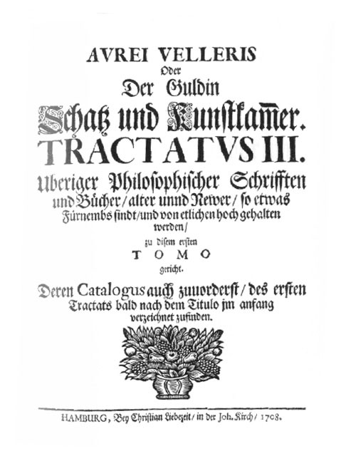
Fulcanelli cite Aurach dans son Mystère des Cathédrales :
«...[il] montre un matras de verre, rempli à moitié d'une liqueur verte, et ajoute que tout l'art repose sur l'acquisition de ce seul Lion verd et que son nom même indique sa couleur. C'est le vitriol de Basile Valentin.» [Myst., p. 185]
Ce n'est pas le vitriol romain [cf. Atalanta, XXV]. Il s'agit là du dissolvant universel, du moins compris dans le petit monde des alchimistes, c'est-à-dire du vitriol azoqué. Fulcanelli se réfère aux planches V, V, bis, V, 4. E. Canseliet parle du Caput -de manière indirecte il est vrai- par une citation (p. 261) de Georges Aurach, dans son Alchimie Expliquée sur ses Textes classiques [l'Oeuf philosophal]:
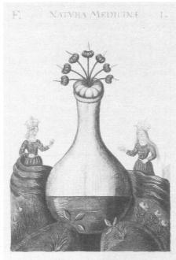
FIGURE I
(c. XVIIe siècle, d'après G. Aurach)« La première, qui représente un lyon verd, contient la veritable matiere et faict cognoistre de quelle couleur elle est ; et on l'appelle Adrop ou Azoth, Atropum ou Duenech »
et Canseliet d'ajouter :
« Il est vrai que ce n'est pas le lion vert...qui constitue directement la partie la plus importante du vaisseau de nature, mais bien les deux sels qui en découlent, et dont l'un vient du caput mortuum, et l'autre, un peu plus tard, de la vitreuse provision, après qu'elle a livré...le bouton de retour. »
et E. Canseliet s'est bien sûr gardé de dire quel était ce Caput et quelle était la vitreuse provision [en grec, paraskeuasthV, a le sens de ministre ou de serviteur, en rapport direct avec le rôle du Mercure]. Mais si l'on nous a bien suivi dans d'autres sections, il sera facile de faire le rapprochement, riche de cabale, entre le bouton de retour et le retour des cendres, ce que les anciens alchimistes appellent - avec G. Aurach - CINIS CINERUM [cendre des cendres]. Il devient aisé de voir alors que le bouton de retour ne peut être que le Soufre rouge, l'expression n'étant pas employée par Canseliet, car trop exotérique, et que le sel qui provient du Caput ne peut être que celui qui résulte de la décapitation de la Gorgone par Persée : du sang de la Méduse, jaillit en effet le cheval Pégase et Chrysaor [cf. 1, 2, 3, 4, 5, 6, 7, 8,]. L'étudiant n'aura pas grand'peine à trouver quel est le SEL qui se cache sous les traits de Chrysaor... Aurach est cité par Fulcanelli dans les Demeures Philosophales, tome I et II. Au tome II, nous trouvons, p. 112, une digression sur le serpent Ouroboros, où le grand Adepte professe que l'ésotérisme [du dragon qui se mord la queue] est équivalente à certaines figures figurant dans le Très précieux Don de Dieu. On trouve encore une citation, p. 285, de la plume de Canseliet, qui ajoute une composition
« escript[e] par Georges Aurach et peinct[e] de sa propre main, l'an de Salut de l'Humanité rachetée, 1415 ».
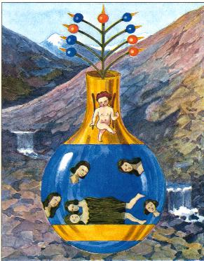
FIGURE II
(légende : La pièce est composée des quatre éléments. Et les corps sont entièrement dissous en notre argent vif,
et il se fait une eau mobile, blanche comme la larme)Cette planche reproduit celle du Précieux Don de Dieu [Bibliotheca Academia dei Lincei, Rome, XVIe siècle], planche III qui se rapproche de la planche II de l'Anatomia Auri de Mylius. Par parenthèse, Canseliet y voit l'action des Quatre Eléments, là où il est évident que c'est le système des vents [rose des vents] qui est évoqué, et partant, les régimes du feu dans l'oeuvre. La planche II de la Bibliothèque de l'Arsenal est analogue. Notez que seule la planche de Rome donne la clef de l'énigme. Il est fait référence de Vulturnus, Notus, Calaïs et Zéthès. Dans ses Etudes de symbolisme alchimique [Alchimie, Pauvert, 1978], Canseliet revient plusieurs fois sur G. Aurach. C'est pour nous présenter le début de la putréfaction :
« L'esprit et le corps entrent ensemble dans la putréfaction salutaire, laquelle, sur le plan de la vérité physique, prescrit qu'on doive rejeter, avec horreur et indignation, l'incinération des défunts. »
Evidemment, si l'on suit l'envieuse recommandation de Canseliet, on n'obtiendra pas la précieuse CINIS CINERUM par laquelle l'occulte devient manifeste, d'où, des ténèbres surgit la lumière, sous la forme de ce bouton de retour que les anciens alchimistes ont voilé avec leur lys, leur marguerite ou leur violette selon le stade où ils considéraient l'évolution de ce bouton.
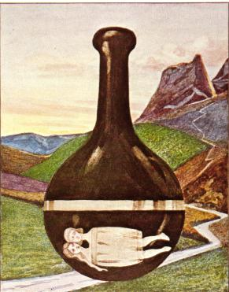
FIGURE III
(putréfaction)Tout, dans cette planche, a de l'importance. Et d'abord, que la putréfaction - l'oeuvre au noir - n'est pas que dissolution, mais qu'elle est aussi la clef de la conjonction [cf. Ripley]. C'est ce qu'indique le bandeau blanc qui ceinture le vase. En arrière plan, nous voyons un fleuve qui descend des montagnes, d'où il prend sa source. A droite, on remarque que le flanc de la montagne a été mis à nu ; est-ce pour dévoiler ainsi le V.I.T.R.I.O.L. ? Dans l'ensemble, cette planche est cohérente avec celles des autres séries. Canseliet a inséré la planche dans le chapitre de l'Oeuvre alchimique et la Sainte Messe. Sur le vitriol, voici quelques mots :
« Lucifer est l'étoile du matin, la Vénus des Sages, qui porte, sur sa couronne, ce sel smaragdin, tant précieux à l'artiste et voilé par Basile Valentin, sous le vocable de vitriol. » [Alchimie, p. 278]
Occasion, pour nous, de revenir sur le symbolisme complexe de Vénus [cf. Atalanta fugiens]. La planète Vénus, dont Basile Valentin savait qu'elle était de « computation difficile » [Choses Naturelles et Surnaturelles] a cette double qualité, pour l'alchimiste, d'être la planète la plus visible - en dehors de la Lune et de Jupiter -. Et d'apparaître, à intervalle régulier, soit à l'Orient, soit à l'Occident. Les alchimistes nous ont toujours dit que le magistère avait aussi ses points cardinaux et que le début s'opérait à l'Orient, et la fin à l'Occident. Or, si l'on combine le croissant lunaire terminal et l'hiéroglyphe de Vénus, nous obtenons le Mercure des Philosophes, d'où dépend fort logiquement le signe des Gémeaux. De même, si l'on combine le premier croissant de Lune et Vénus à l'Occident, qui du fait de son parcours d'Aphrodite qu'elle était, s'est transformée en Terre - la fameuse stibine -, nous obtenons alors le signe de Neptune, qui dirige le signe des Poissons. Nous avons donc, d'un côté un signe d'EAU [Gémeaux] et de l'autre côté un signe d'AIR [Poissons], selon le système quaternaire réformé que nous avons proposé [cf. Atalanta, XXIX]. Si l'on tient compte que le Mercure est tout entier gouverné par l'AIR et l'EAU, nous tenons dès lors le secret du dissolvant avec les Gémeaux [le Caducée d'Hermès, emblème de la conjonction, solution de la putréfaction, comme le donne à voir la FIGURE III] et les Poissons [signe du Soufre renaissant].
E. Canseliet revient sur Aurach dans le chapitre de l'Esotérisme du Verbe, p. 299 :Quant a la grande semaine ou le Démiurge se reposa le septième jour, voici, maintenant, ce que nous dit, et qui n'est pas sans intérêt, l'adepte inconnu, auteur du commentaire latin de strophes en langue italienne également anonymes, le tout traduit en français par B. de L. initiales cachant a peine Bruno de Lansac, ce respectable vieillard qui habitait Paris, vers 1725, et à qui, toujours selon l'abbé Lenglet-Dufresnoy, fut dérobé, par un sieur Halluy, le manuscrit du Jardin des Richesses par Georges Aurach de Strasbourg — « Hortus Divinarum Georgio Auracho de Argentina » :Ce nom d'Aurach semble teinté de cabale. Ainsi :« la Nature qui se plaît dans ses propres nombres est satisfaite du nombre mystérieux de sept, surtout dans les choses qui dépendent du Globe lunaire, la Lune nous faisant voir sensiblement un nombre infini d'altérations et de vicissitudes dans ce nombre septénaire. C'est par ce nombre magique que la Nature, et tout ce qui en dépend est secrètement gouverné. Mais ce mystère naturel est caché aux esprits grossiers qui ne peuvent rien voir que par les veux du corps, qui se contentent de cela et ne cherchent rien davantage [...] »
« Rullandus Blanchard dit qu'on a donné au nitre les noms Baurach, Algali, sel Anderone, Anatrm, Cabalatar, et que Basile Valentin l'indiquait par celui de Serpent de terre, Serpens terrenus. »
comme le rapporte Pernety. Outre l'aurichalque [dont on peut considérer que Aurach est l'anagramme incomplet], dont Fulcanelli suppute qu'il puisse avoir quelque rapport avec le colcothar, ce qui nous rapproche du vitriol romain [Atalanta, XXV]. M. Berthelot, de son côté, rapporte que l'aurichalque est synonyme du laiton [lato] :
« [...] C'est la plus vieille citation que je connaisse du mot laiton, employé comme synonyme de l'aurichalque, que l'on retrouve d'ailleurs dénommé concurremment (fol. 5o v°). Le mot lato lui-même, substitué à aurichalque, est une variante du mot electrum, comme Ducange l'admettait et comme le démontre le passage suivant de Vincent de Beauvais (Speculum naturale, liv. VIII, chap. xxxvi), lequel met en même temps a nu l'artifice ordinaire des prétendus transmutateurs [...] » [in Idée alchimique, I]
qui désigne l'homme double igné de Basile, exact équivalent de l'image présentée sur la FIGURE III. Quant à « Georgio Auracho de Argentina », où Argentina est pris pour Strasbourg [par cabale, ville du stras, cf. notre voie humide], voilà un joli trait. Où l'on apprend, en somme, que Latone doit non seulement être blanchie, mais aussi dorée [opération assurée par le bouton de retour de la vitreuse provision, c'est-à-dire du serviteur de verre - verd, vert -]. Canseliet revient une dernière fois sur Bruno de Lansac [alias Aurach], p. 368, au chapitre de De Cyrano Bergerac :
« Ce noir plus noir que le noir et transparent néanmoins, regardons-le, maintenant, dans l'une des phases dont Georges Aurach de Strasbourg, illustra son petit ouvrage nno encore imprimé : Le Tre-Precieux Don de Dieu, escript et peinct de sa propre main, l'an du Salut de l'Humanité rachetée, 1415 [...] »
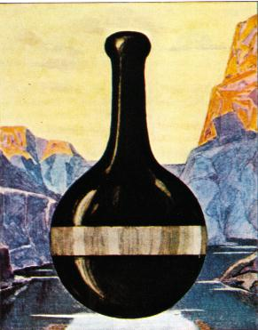
FIGURE IV
(conjonction)« La tête du corbeau, une noirceur transparente. Ce qui paraît au-dessus de la matière, n'est autre chose que des vapeurs, ou des esprits, ou de la fumée. Et cette terre noire, jaunâtre et bourbeuse des fèces, qui se tient au-dessus de l'eau, descendra et il naîtra des vers »
Notez que par perspective, on peut tout aussi bien voir dans le vase, un sédiment au-dessus duquel surnage une liqueur blanche qu'un bandeau blanc, se situant au milieu du vaisseau.
Dans son Alchimie [Dervy, 1986], J. Van Lennep écrit qu'E. Canseliet publia le texte du Très précieux don de Dieu, un mss. du XVIIe siècle qu'il avait pu recopier en 1920 et dont il affirma qu'il différait sensiblement d'un autre exemplaire, postérieur d'un siècle et conservé à la bibliothèque nationale [in La Tour Saint-Jacques, mars-avril 1957, pp. 62-78 ; pp. 85-90 ; pp. 62-77]. Il s'agit d'une traduction d'un original latin qui est proche du texte, également illustré, contenu dans un recueil du British Museum. On y trouve le texte de Johannes Andreae et le Donum Dei de Georges Aurach. Il est daté, nous dit Van Lennep, du dernier quart du XVe siècle. A noter que Thorndike, dans son History of Magic and Experimental Science [New-York, 1934, vol. III, p. 101], signale un Donum Dei au nom de John Dastin à la Bibl. Univ. de Bologne. Il lui paraît identique à un texte attribué à Raymond Lulle et ayant le même titre. Quoi qu'il en soit, le manuscrit du British Museum est le premier qui développe la séquence thématique des vases à figures retraçant les étapes du magistère. De tels vases étaient déjà apparus dans les traités de Gratheus [Grasseus ?], puis dans l'Aurora Consurgens.
Adam McLean signale :
« This famous work has a series of flasks in which the evolution of the white and red stones is described. It first appears in the 15th century and is sometimes ascribed to George Aurach and dated 1475. I have been able to find over 60 manuscripts of this work. There are 12 (or sometimes 13) small watercoloured drawings in the original Latin text. »
Le lecteur verra ci-dessous le texte qui provient probablement de l'exemplaire de la bnf. Il est illustré de gravures dues à J.D. Mylius, Anatomia Auri, 1628. Puis, en note de texte, nous donnons les planches tirées de l'Aureum Vellus de Güldin Schatz [Hambourg, 1708]. Puis encore, celles du précieux Don de Dieu, [Bibliotheca Academia dei Lincei, Rome, XVIe siècle]. Celles du Donum Dei, [Paris, Bibliothèque de l'Arsenal, Ms. 975, f. 10 r. - 26 r]. Enfin, celles du Britisch Museum [MS. Sloane 2560], qui sont donc au plan historique, les premières du genre, avec un commentaire adapté de J. Van Lennep.
Remerciements : à mon ami Alain Mauranne, pour certaines planches en couleur de l'exemplaire de la Bibliothèque de l'Arsenal, à Paris. Et pour les planches de l'Anatomia Auri de J.D. Mylius.
Texte du Donum DeiJ’ai eu la science de cet Art uniquement par l’Inspiration Divine, qui a permis à son serviteur de déclarer les raisons véritables de juger et discerner, lui donnant la force à la moindre occasion, et son pardon comme il n’a donné à aucun homme. Par conséquent si je ne craignais pas le jour du Jugement je ne dévoilerai ou publierai rien de cette science. Mais je veux rendre mon devoir aux hommes fidèles comme leur Ancre de croyance qu'il m'a donné. Celui qui ne connaît pas les principes en lui-même est très loin de l’art de la philosophie car il n’a pas le vrai livre sur lequel il doit fonder sa détermination. Mais si vous connaissez avant tout et principalement ses causes naturelles et point les autres, alors vous avez le chemin du chemin des principes de cet Art. Et bien qu’un homme connaisse la matière il demeure à accomplir plusieurs choses. Il est nécessaire que notre pierre soit tirée des natures de deux corps avant que l’Elixir puisse être effectué, il est par conséquent très vrai de dire : Ô Eau de forme Pontique, ou aigre qui dissous les Eléments, Ô Nature très grande, créature de la Nature qui contient la Nature, et domine la nature de tous ceux qui viennent avec la lumière et sont engendrés par la lumière et dont de tous elle est la mère, quel un nuage noir est sorti d’elle1.
Premièrement de notre Lion Vert qui est notre matière véritable et de sa couleur, et est appelé Adrop, clopum, Duenech2. Si vous comprenez correctement ce travail, le lisez d’un bout à l’autre alors vous verrez des miracles fait de nos jours, que je n’aurais pu décrire et peindre si je ne les avais vu et touché. Je n’ai pas montré tout ce qui apparaît et est nécessaire à ce travail, car il est certaines choses dont on ne doit parler, ces choses, je les ai décrites en images. Et il n’y a jamais eu d’ouvrages décrivant ce travail complètement. Car il est impossible de le connaître sans l’aide de Dieu ou d’un maître craignant Dieu. Comprenez que c’est une très longue voie, que par conséquent patience et attente seront nécessaires3. Car en notre Magistère il y aura des fous et aveugle qui diront qu’ils peuvent faire L’Or potable à partir de l’Or commun ou croient que c’est le meilleur remède pour guérir toute infirmité. De même certains Docteurs font bouillir des Ducats dans l’eau, disant que c’est ce qu’il y a de meilleur pour la santé, mais ceci est plutôt dangereux et ne doit être bu. Car c’est le pur contraire, sauf leur respect, que cela était le l’Or potable ou que c’était bon pour la santé. Car jamais l’Or commun ou aucun autre métal n’est bon pour guérir, mais ils sont plutôt mauvais comme j’ai dit et ne peuvent être bu4. Mais je vous accorderai qu’ils sont bons et meilleurs pour acheter les médications et payer les docteurs. Ils sont aussi bons comme les bassines pleines de Ducat or d’or fin pour les montrer à l’homme pauvre, pour le réconforter de la vue de l’or, mais le véritable or potable des philosophes est l’Elixir complet5. Et c’est l’or potable dont seulement le pouvoir est visible, qui enlève toutes superfluidités aussi bien pour tous les corps que des métaux, car il convertit tout métal imparfait lépreux et infirme, de même qu’il fait du corps de l’homme. Et cela est des plus certain. Notez que ceci est l’intention des philosophes, mais ceux qui le comprenne être de l’or commun, sont aveugles, et plus qu’aveugles, et sont des fourbes. Car si l’or commun devait donner sa perfection à un autre, devrait-il alors demeurer imparfait ? Pourquoi devriez vous avoir cette science ou trouver le premier régime en lisant seulement un livre ? Maintenant par après, les philosophes ont dit que la vérité ne peut être discernée sans erreur, et en cet Art rien ne converti mieux les peines du cœur. Par conséquent je n’ai pas épargné ma longue vie à pratiquer, de peur d’aventure qu’à cause des réprimandes de cette sagesse je ne devienne découragé. Je devrai premièrement prier Dieu qui est le spectateur de toutes choses, à qui rien ne peut être caché, et à qui appartiennent l’honneur et la gloire dans tous les monde des mondes. Amen
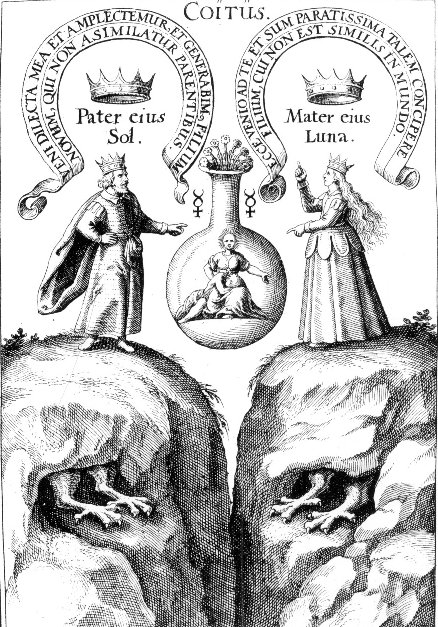
planche IDe celui dont le père est une vierge dit, viens ma bien aimée que nous nous embrassions, et que nous engendrions une nouvelle forme qui ne sera pas comme ses parents. Le Roi par conséquent dont la tête est rouge, les yeux noirs, et les pieds blancs est le Magistère. La mère n’a pas conçu, vois je viens à toi, et je suis prête à concevoir une forme, tel qu’il n’y en a pas dans le monde. Et il est né entre deux montagnes, vous connaissez maintenant la vérité6. Ce livre est écrit suivant Hermès Trimégiste, et ne diffère en lui en aucun texte, et cela vous devez le savoir. Et bien que cet ouvrage ne cite son nom, tout son contenu et ses fondements sont d’Hermès comme dit ci-dessus. Aucun de ses chapitres n’a été ignoré, aussi soyez sûr de les suivre car il n’y a pas de plus sûr auteur, et aucun n’est comme lui, le texte ne varie en rien de ce que les anciens ont écrit de cet Art et dont Hermès a parlé plus simplement que tous les autres, et par la grâce de Dieu à qui est tout honneur et toute gloire, le lecteur pourra percevoir et comprendre7. Amen
Comment les corps doivent être dissous dans le Vif Argent des Philosophes comme en l’eau.
La matière de la Pierre est une eau grasse, ou est un froid, congelant l’eau. Et ces pierres sont plus précieuses que celles qui viennent des animaux ou autre. Vous ne pouvez préparer aucune pierre sans Duenech, la verte et liquide qui est née dans nos mines8. Voyez, c’est sur les montagnes qui sont sur la droite et la gauche et qui s’élèvent proches l’une de l’autre que notre pierre doit être trouvée, et dans la montagne qui porte toutes sortes et espèces d’Esprits et choses secrètes Aromatiques, est semblablement à la mine de la pierre qui est nécessaire en ce travail, une chose vivante. Vous devez la trouver partout, dans les plaines, sur les montagnes, et dans les eaux, et le pauvre la possède aussi bien que le riche9. C’est à la fois une chose très précieuse et très vile. Elle est née de la chair et du sang, et Ô combien elle est précieuse à celui qui la connaît. Bénie sois-tu Ô Nature qui par ton opération, fait de quelque chose d’imparfait quelque chose de parfait. Par conséquent, ne prenez cette Nature que pure et propre, à l’état crud, terrestre, pure et vraie. Si vous faites autrement, vous ne ferez rien de profitable10.
Recherchons la nature des quatre éléments, que Amptys, imperctys et amxtys ont extrait du ventre de la terre.
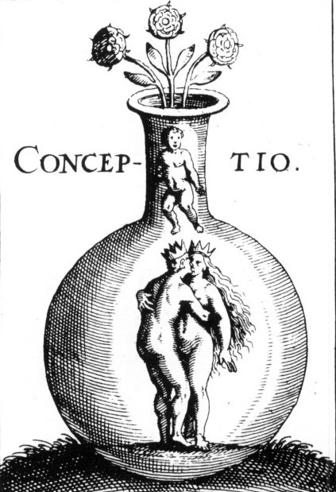
Planche IIAinsi se fait la Solution des philosophes ainsi que notre Vif Argent.11
Comment les corps sont dissous en l’eau pour former un nouveau corps.
Notre Pierre est un corps inerte mortifiant et vivifiant, et de façon à ce que rien d’étranger n’entre dans notre pierre, si ce n’est elle même, conjoint le serviteur à sa sœur odoriférante et d’eux s’engendra l’art. Que la femme blanche soit mariée à l’homme rouge, l’embrasse rapidement et soit jointe à lui, et qu’ils se dissolvent ensemble et que d’eux deux il ne soit fait qu’un seul corps12. Il y a trois couleurs parfaites desquelles les autres prendront naissance. La première est noire, la seconde blanche, et la troisième rouge, il y a d’autres couleurs, mais ont ne devra pas s’en préoccuper car elles disparaîtront avant la blancheur13. Alors est faite l’union des deux corps, et si nécessaire en notre Magistère, et si l’un met seulement un des deux corps aux lieux des deux, dans notre Pierre, elle ne sera teinte en aucune manière14, par conséquent la conjonction de ces deux corps est nécessaire, lesquels deux quand ils sont conjoints, et ont été reçu en la commixtion de la pierre, la pierre est engendrée dans le ventre du vent, et c’est ce que dit le philosophe. Le vent l’a porté en son ventre, et le vent est l’Air, et l’Air est la vie, et la vie est l’Ame, qui est l’huile et l’eau15. Je suis celui qui exalté par delà les trois cercles16, qui du monde a quatre faces et n’a pas de père, dont l’une est dans les montagnes, l’autre dans les Airs, l’autre dans les Pierres, et l’autre dans les cavernes ou les lieux creux17.
Cette Pierre est faite et composée des quatre éléments
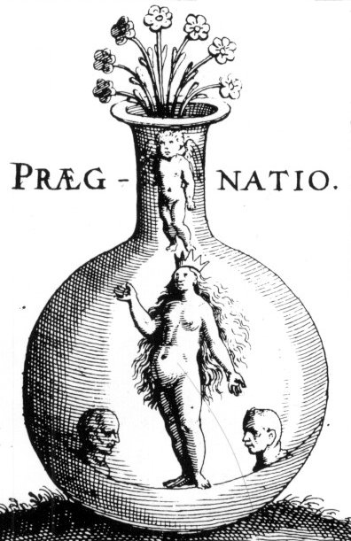
planche IIIVoici les corps dissous dans notre Vif Argent et en est fait une eau permanente, fixe et blanche comme les larmes des yeux.18
Ici se fait la putréfaction des philosophes qui n’avait été montrée et qui est appelée soufre19.
Convertissez les Natures des Eléments et vous trouverez ce que vous chercher. Convertir les natures c’est faire un corps spirituel dans notre Magistère, premièrement nous faisons que ce qui est épais devienne subtil, et d’un corps d’eau, et par conséquent nous faisons que ce qui est dessous soit dessus, et vice versa, car les corps dissous sont réduits à la nature des esprits, et ne seront jamais désunis, de même que l’eau mélangé avec l’eau, et vraiment tout le régime de l’œuvre n’est rien d’autre, car l’eau permanente a en elle tout ce qui nous est nécessaire20. Par conséquent gardez précieusement cette eau qui est bonne opération, et faites le blanc blanc, et le rouge rouge, elle est de même nature que sa chair et son sang, l’agent, ou chaux, et les quatre Eléments, sur lesquels elle a domination, ne doivent être faits d’autres éléments qui ne participent pas à sa nature21.
La putréfaction des Philosophes est la tête de Corbeau une noirceur brillante et transparente.
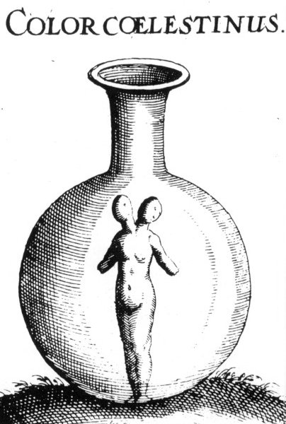
planche IVQue les corps soient mis en putréfaction et deviennent terre noire, et quand vous verrez cette matière devenue noire, réjouissez-vous car c’est le commencement des opérations. Et la putréfaction est nécessaire.22
La plupart de cette eau se transforme en terre noire et féculente.
Par conséquent brûlez notre Laiton à feu modéré semblable à celui de la poule couvant ses œufs, jusqu’à ce que du corps dont ils sont constitués puisse être extraite la teinture, cependant vous ne devriez pas la tirer toute d’un seul coup, mais petit à petit, chaque jour jusqu’à complétion. Je suis le noir du blanc, et le rouge du blanc, et le citrine du rouge, et je ne suis certainement point menteur car je dis la vérité. Et maintenant vous qui êtes rouge de l’art vient le Corbeau, qui dans l’obscurité de la nuit et la clarté du jour vole sans ailes23. De l’aigreur de sa gorge la couleur est prise, de son corps la rougeur, et de son dos la pure eau. Comprenez le don de Dieu, recevez-le, et cachez-le à la vue des faux philosophes, car elle n’est pas cachée aux cavernes des métaux, laquelle pierre est minérale, et animale, avec des couleurs brillantes, ou montagne, ou mer ouverte. Voyez je vous l’ai exposé véritablement quand c’est premièrement noir, nous l’appelons la caverne de la science qui n’est pas sans obscurité, car c’est la teinture que nous cherchons, car en chaque corps nous donnons ou mettons de la couleur, laquelle chose était cachée dans son laiton, telle l’Ame dans le corps de l’homme24. Par conséquent cher fils, quand vous êtes en ce travail, voyez si vous avez d’abord la couleur noire, et alors vous êtes sûr que vous putréfiez et procédez de la bonne manière, patience et soins sont nécessaire à notre ouvrage. Ô nature bénie, que bénie soit ton œuvre, qui par la véritable putréfaction, noire et obscure fait que l’imparfait devienne parfait. Après vous devez faire naître des choses diverses et nouvelles, diverses couleurs que votre verdeur ou lion vert font apparaître25.
La tête du Corbeau26 est noirceur transparente. C’est sur la matière des nuages noirs, esprits ou formes. Cette terre qui est sur la matière descend au fond d’un autre vaisseau et alors des vers apparaissent.
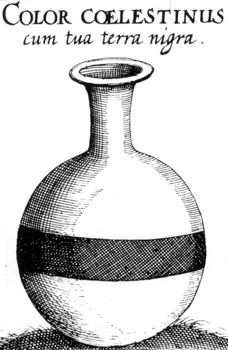
planche VC’est la terre noire féculente dont tous les Philosophes parlent et qui se tient au-dessus des eaux.27
Comment cette terre noire doit se tenir au-dessus des eaux au commencement et petit à petit est ensevelie dans leurs profondeurs.
Déjà voyant la matière s’accroître, devenir plus épaisse et descendre vers la terre, et cette épaisseur se tenant d’abord sur les eaux, puis devenant petit à petit moins épaisse, ils virent la terre se noyer dans l’eau et demeurer au fond du vaisseau sous les eaux, laquelle terre était jaune noire et féculente, ils dirent alors que la corruption était parfaite28.
Le feu modéré du fourneau suivant la manière des Philosophes, fait que toute la matière se dissout dans l’eau. Après quoi gouvernez-le avec un feu doux jusqu’à ce que presque tout soit devenu une terre noire, ce qui sera fait en 21 jours29. Sachez que cette science n’est rien d’autre que la parfaite inspiration de Dieu. Car tout notre Art ou Magistère n’est rien qu’une seule chose et nous le prouverons par les dires des philosophes. Et comme nous avons vu et touché par notre travail et industrie, nous avons connu cette seule chose parfaite jusqu’au blanc puis jusqu’au rouge, et nous ne pourrons jamais trouver d’autre chose où la perfection consiste en la vraie transmutation et parfaite préparation des corps, sinon être détruit ainsi et fait noir pour toujours.
Aussi soyez affairé dans votre opération dans tous ses degrés patiemment continuant la décoction jusqu’à ce qu’avec le temps une teinture en sorte noire au-dessus des eaux, et quand vous verrez la noirceur apparaître dans ladite eau, sachez que tout le corps doit être liquéfié, puis il convient de continuer le feu doux, jusqu’à ce les nuages noirs apparaissent. L’intention des philosophes est que maintenant le corps dissout en poudre noire peut entrer dans l’eau et tout peut être fait un. Puis l’eau prend la blancheur de sa propre nature. Par conséquent si tout n’est transformé en eau, vous n’arriverez jamais à la parfaite perfection30.
Caput Corvi.
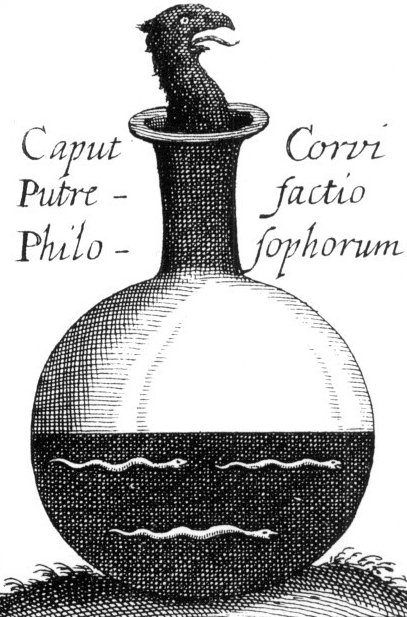
planche VI
La tête du Corbeau est une terre noire et féculente en laquelle des vers s’engendrent, l’un dévorant l’autre, et par la corruption de l’un amène la génération de l’autre.31
Comment cette terre est dissoute dans l’eau et de nouveau avec la couleur de l’huile qui est appelée l’huile des Philosophes.
Ici est il est nécessaire que par un long temps la pierre devienne noire et quelle ait l’apparence de la vraie solution quand la noirceur apparaît la première fois, c’est la figure de la putréfaction et de la solution de la pierre, mais quand elle s’évanouit et disparaît, c’est un signe de toute la putréfaction de la pierre et de sa dissolution, ou autrement, on demande parfois si les nuages noirs dans ladite pierre durent l’espace de 40 jours, je réponds que quelquefois ils durent plus et quelquefois moins, cette variation provient de la variété et de la quantité de médecine et dépend de la sagesse de l’opérateur, par conséquent une quantité plus grande requiert un temps plus grand et une quantité moindre un temps plus court. La sagesse de l’opérateur aide l’art de la séparation de la noirceur. De plus certains demandent quel est le temps que cette putréfaction doit endurer jusqu'au nettoyage de la terre ? je la fais en 40 jours et quelquefois plus, tout dépend de la quantité d’eau et de terre.32
La Tête de Corbeau, l’Huile des Philosophes.
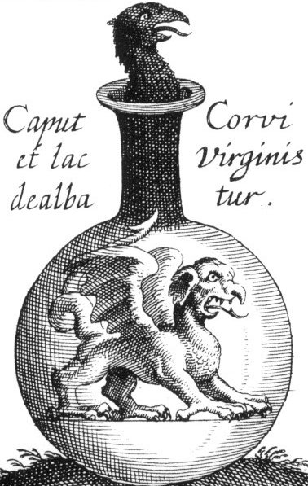
planche VIIAinsi naît notre nouveau Fils noir, et son nom est Elixir. La terre noire et féculente est transformée en Argent-vif comme précédemment et dissoute de la même couleur que l’huile, que l’on appelle l’huile des Philosophes.33
Comment le Dragon naît dans la noirceur et est nourri de son Mercure et se tue lui-même et est enseveli de même et l’eau devient blanche.
L’or est dissous afin d’être réduit en sa première matière, c’est par cela qu’il est fait vrai soufre et Argent-vif. Et par là nous pouvons faire meilleur argent et Or lorsqu’il est converti en leur matière. Par conséquent il doit être parfaitement lavé avant de devenir vrai soufre et Argent-vif, car en accord avec les Philosophes ceux-ci sont la vraie matière des métaux. Alors il peut prendre femme, et lui faire un enfant et mortifier et vivifier les sortes de générations, et peut nettoyer et amener à la lumière, et séparer le brillant de l’obscur, et ce sera grande dignité. Par conséquent nous conjoignons notre roi couronné à notre enfant rouge et par un feu doux les unissons, ils concevront et engendrerons un Fils. Car les nuages qui étaient sur lui retourneront dans le corps d’où ils vinrent. Par conséquent continue le bain tempéré ou baigne-le pendant un temps tel que tout soit dissout dans l’eau, et que toute la teinture de couleur noire soit extraite ce qui est le signe et la marque de la Dissolution.34
La maison noire est le soufre des Philosophes.
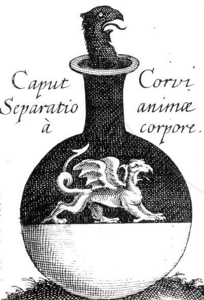
planche VIIIIci le Dragon s’épaissit et blanchit et dévore ses propres ailes.35
Voici l’eau entièrement nettoyée de sa noirceur et ayant la couleur du lait, et plusieurs couleurs apparaissent durant la noirceur.
Le dragon ici dévore ses propres ailes et montre alors plusieurs couleurs de diverses manières et en plusieurs fois, il passe de couleur en couleur jusqu’à devenir blanc. Une bête sauvage et très cruelle ne doit pas être nourrie, sauf quand elle est affamée et assoifée, et après trois jours de privations, alors naît le Dragon, dont la maison est obscurité et noirceur. Vraie mort et noirceur volent en cette Mer, et le dragon vole à partir des rayons lumineux du Fils qui arrête les trous, et notre forme morte revivra, et le roi viendra du feu, et sera réjoui par ce mariage. Et les choses cachées apparaîtront, et le lait de la vierge sera fait blanc, et l’enfant maintenant vivifié est apprivoisé, et vainqueur du feu et triomphateur de la teinture.36
La Maison noire, Soufre des Philosophes.
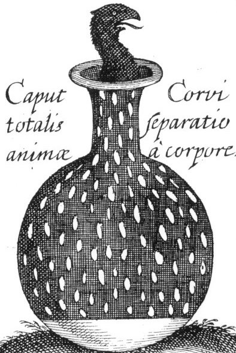
planche IXIci tout le dragon est nettoyé de sa noirceur et est fait blanc comme lait.
Comment les nuages noirs qui étaient au-dessus des eaux dans le vaisseau se dissolvent dans le corps d’où elles proviennent.
Prenez le noir, plus noir que noir, et diverses couleurs apparaîtront en lui, et le lait des vierges sera fait blanc, et notre Fils maintenant revivifié doit être fait un vainqueur du feu, excellant en teintures et couleurs, et les nuages s’élèvent de la mer, et la pluie tombe sur la terre, car chaque corps dense et épais tombe ou glisse en son centre. L’Argent-vif sublimé du laiton d’où toute chose provient, est une eau claire et vraie teinture qui fait disparaître l’obscurité du laiton, car c’est le soufre blanc qui seulement fait le laiton blanc d’où l’esprit est fixé et ne peut s’envoler, sache que le col du vaisseau est la tête du Corbeau que tu dois tuer, et qu’après apparaîtra une colombe puis après un phœnix. Soit fortuné et heureux avec ces quelques mots contenant toute la science pour le blanc et le rouge.37
La Cendre des Cendres.
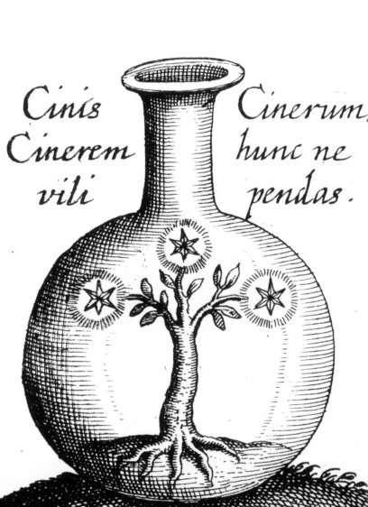
planche XLes nuages noirs descendent sur le corps d’où ils sont sortis et se fait une alliance entre la terre et l’eau et les cendres sont formées. Le Corbeau est noir, la Colombe est blanche, le Phœnix se brûle afin de renaître de ses cendres.38
Ces cendres sont faites blanches comme du marbre Brillant et c’est l’Elixir au blanc et il est fait des cendres.
Parce que la Nature ne se meut pas sauf par l’emprise de la chaleur. Par conséquent si vous mesurez bien la chaleur, l’eau et le feu lui sont suffisants. Car ils lavent le corps, ils le nettoient et nourrissent et font disparaître sa noirceur. Cette eau résidant dans l’air doit être attirée vers la terre tel le Fer est attiré par l’aimant. Par conséquent tous ces ordres de préparations sont réitérés sur lui quatre fois. Et à la fin calcinez-là par sa manière de calciner et de s’élever, et de cette manière vous devez gouverner la Terre de la Pierre. Calciner n’est rien d’autre que de dessécher et transformer en cendres. Par conséquent brûlez-là sans peur, jusqu’à ce qu’elle soit cendre, que vous mélangerez bien après. Ne méprisez pas ces cendres mais donnez-leur la sueur qu’elles ont rejetée, et lorsqu’elles ont bu toute l’eau et elles seront transformées en terre en l’espace de quelques jours. Quand toute l’humidité sera séchée, dans le vaisseau apparaîtront toutes les couleurs du monde. Par conséquent laissez le feu plusieurs jours jusqu’à ce que [tout] soit fait comme ci-dessus. Que se qui vient de lui soit remis sur lui jusqu’à ce qu’il soit entièrement fixe, et ne s’enfuira plus de lui par le feu, que la noirceur séparée du corps, soit réduite par le corps d’où elle provient et soit faite un corps.39
La Rose Blanche.
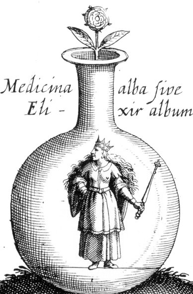
planche XIJe suis l’Elixir au blanc transformant tous les corps imparfaits en l’argent le plus pur meilleur que celui de la mine, dont une part change un millier d’Argent-vif en l’Argent le plus pur.40
Comment cette blancheur est convertie en une rougeur transparente comme le Rubis, et c’est l’Elixir au rouge.41
Prenez le laiton blanc et déchirez vos livres en morceaux de peur que votre cœur ne soit déchiré42. Car notre Art est aisé et un peu d’aide servira. Celui qui m’a fait blanc doit me faire rouge, car le blanc et le rouge proviennent d’une même nature, ce qui est dans le blanc est dans le rouge, par conséquent travaillez philosophiquement, et si vous faite le blanc et passez les limites, ou fin de cela, notre art béni, cette chose si vous la voyez soudainement, admiration ou merveille, peur et crainte vous envahiront43. Décantez, broyez, et réitérez, sachez que la fleur de la pierre est la pierre de la Pierre44, rôtissez-la par conséquent un certain nombre de jour jusqu’à ce qu’elle soit brillante comme du marbre, et alors sachez quand [cela] sera ainsi fait, que c’est le plus grand secret. Car la pierre est mélangée à la Pierre. Maintenant mes chers amis vous avez appris à faire le blanc.
Maintenant il doit être parlé du rouge, mais si vous ne faites d’abord le blanc, vous ne ferez jamais le vrai rouge, car aucun homme ne peut aller du premier au troisième sans passer par le second. Aussi vous ne passerez point du blanc au citrin sans passer par le blanc, parce que ce citrin est fait un corps contenant beaucoup de blanc et peu de noir45. Par conséquent faites le noir blanc, et le blanc rouge et vous avez l’art. Comme l’année est divisée en quatre parties ainsi est divisé notre travail béni. La première est l’Hiver froid et humide, la seconde est le printemps chaud humide et florissant. La troisième est l’été, chaud, sec et rouge. La quantième celle des moissons froide et sèche, qui est le temps de récolter les fruits46. Cette disposition colorant la nature gouverne jusqu’au temps [où] les fruits soient mûrs à plaisir. Mais maintenant l’hiver est passé, les pluies ont disparues. Car les fleurs sont apparues sur notre terre à l’époque du printemps. Néanmoins nous circulons la rose blanche qui fait [que] tout corps imparfait ou épais se transforme en pur argent. Par conséquent lorsque vous voyez la blancheur monter de toutes parts, soyez sûr que dans cette blancheur est cachée la rougeur. Par conséquent vous devez tirer toute la blancheur et la cuire jusqu’à ce qu’elle devienne entièrement rouge.
Notes La Rose Rouge.
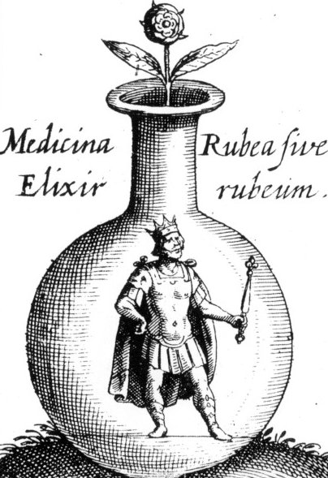
planche XII
Je suis l’Elixir au rouge transformant tous les corps imparfait en l’or le plus pur meilleur que celui de la mine, une part projetée sur mille d’Argent-vif, nous la voyons se congeler et devenir rouge, et être convertie en or le plus pur.47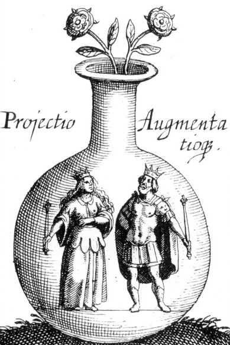
planche XIIILes notes sont accompagnées des planches en couleur, tirées de l'Aureum Vellus de Güldin Schatz, Hambourg, 1708.
1. Il n'y a rien là de très nouveau. Le don de Dieu est aavnt tout est un don du soufre [qeion - qeioV]. Les principes de l'Art sacré sont trois : le Corps, l'Esprit et l'Âme. Envisagés comme les Eléments de Platon, il s'agit à partir d'éléments terreux, d'obtenir une eau ardente [EAU de FEU]. Le secret de l'oeuvre est la connaissance du moyen qui permet à cete EAU de ne pas devenir AIR trop rapidement, avant la cuisson complète des natures métalliques. C'est-à-dire, avant que cette eau ardente ne redevienne TERRE, mais sous une forme transfigurée, voilée sous l'allégorie de la chute de l'Ange. Les deux corps sont le SEL à proprement parler [Arsenic de Geber] et l'Âme [principe de teinture]. L'eau pontique, c'est l'eau permanente appelée aussi dissolvant des Sages ou Mercure philosophique. On lui connaît deux états. La lumière dont il est fait état est l'allégorie de la capture d'un rayon igné solaire, hiéroglyphe spirituel du Soufre rouge. Le secret est de le prendre au filet, et de l'infuser dans le Corps, en masse. C'est pour cela que les alchimistes disent qu'ils leur faut un aimant pour attirer leur acier.
2. Il s'agit là de noms consacrés pour le Mercure. Voyez l'Atalanta, XXVIII pour des explications touchant au Roi Duenech. Le terme clopum est rarement employé et Pernety n'en parle pas dans son Dictionnaire ou dans les Fables Egyptiennes et Grecques.
3. Le temps est un facteur fondamental, par la voie sèche. Tous les alchimistes ainsi que les minéralogistes français du XIXe siècle qui ont préparé les synthèses minérales s'accordent sur ce point.
4. Nous partageons en tous points les vues de l'auteur. Voyez notre voie humide et le chapitre sur l'or potable.
5. L'élixir est le Mercure philosophique au stade du Compost, passées les phases de noirceur, lorsque le laiton a été blanchi.
6. Il s'agit d'une variation sur la planche I. Cette planche présente des analogies formelles avec l'emblème qui est en frontispice du Triomphe Hermétique de Limojon de Saint-Didier. Le roi et la reine sont chacun sur sa colline, c'est-à-dire sur la roche dont provient chaque nature métallique et l'extraction de chaque nature de sa minière est marquée par les griffes que l'on devine en contrebas. L'embryon hermétique est entouré de symboles mercuriels. Le roi s'extrait d'une terre adamique et la reine, d'une fange boueuse. Autre variante :
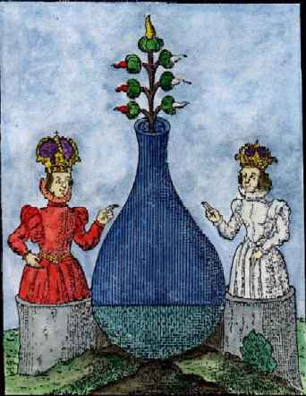
planche I, bisPeut-être moins suggestive que la planche I, cette variante nous présente là encore les époux royaux, chacun semblant mis dans son vase ; le roi et la reine montrent le matras d'où sortent les sept bourgeons de l'arbre solaire. Trois sont blancs, du côté de la reine [Soufre blanc ou SEL] ; trois sont rouges et désignent le Soufre rouge ; le milieu est tenu par la couleur jaune orangé.
7. Trois écrits sont attribués à Hermès : les Sept Chapitres, la Table d'Emeraude et l'Epître d'lsis, femme d'Osiris, sur l'art sacré, adressée à son fils Horus. (Ms. 2250.). Hermès Trismégiste étant fabuleux, les écrits qu'on lui attribue sont donc parfaitement apocryphes...
8. On dit que la Pierre naît d'une conjonction entre l'écume de la Mer Rouge et de la graisse du vent mercuriel [Fig. Hiér.]. Duenech est le moyen de conjoindre ces deux extrémités du vaisseau de nature. On le nomme d'abord le Lion Verd [Jacques Le Tesson a écrit un ouvrage qui lui est consacré, et Artéphius, un traité qui est réputé être l'un des plus clairs. Voyez encore l'Epître de Pontanus].
9. C'est l'un des leitmotive des alchimistes. La première matière ne coûte rien et tout le monde la possède...Il semblerait même que les pauvres en possèdent plus que les riches. On dit aussi que cette matière était présente dans la crêche ou est né le divin enfant, alors que trois Mages voyaient une étoile qui les dirigeait vers l'Orient. Il y a là une indication.
10. Rien ou à peu près ne peut ête tiré de positif ici. On sait seulement que le 1er oeuvre consiste à élire les matières et à les dépurer. En bref, on doit préparer le Soleil et la Lune. Le Soleil se trouve dans le vitriol romain et la Lune, dans une déjection de l'étoile polaire.
11. L'ordre des planches ne suit pas le texte. Il faut donc ici s'armer de prudence. La conception ne saurait précéder la dissolution. La planche II montre les époux royaux réunis ; l'embryon hermétique virtuel et les trois roses sortant du matras annoncent les principes de l'oeuvre [certains y voient le symbole du tartre, dont E. Canseliet suppute qu'il s'agit du « truc » - trux - de tout l'ouvrage]. On connaît une variante de cette gravure.
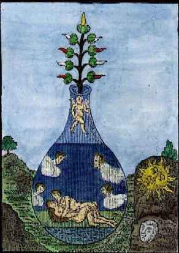
planche II, bisPlanche qui tient le milieu entre la n°II, et celle du Rosaire. On y voit le couple hermétique, des figures où l'on devine des VENTS ; d'autres, incrustées dans des roches qui font voir le corps du soleil et de la lune. Enfin, l'embryon ailé ainsi que le veut cette période où tout se passe en AIR et EAU. On remarquera que la couche du coït est de couleur verte.
12. Il s'agit du corps du Soleil et de la Lune. Cette opération s'effectue lors du bain des Astres et le Rosaire décrit trois phases de cette conjonction. Le Soleil est aussi appelé Gabertin ou Gabricius et la Lune, Beja.
13. Le noir, le blanc et le rouge sont les trois couleurs cardinales de l'oeuvre. Il y en a d'autres, et notamment la couleur jaune-orangée qui annonce symboliquement l'aurore. Les trois couleurs n'existent probablement pas « physiquement », et selon Tollius et Fulcanelli, c'est par l'esprit qu'il faut et les percevoir et les comprendre. Le noir est la couleur consacrée à Saturne, le blanc à la Lune et le rouge au Soleil. Mais ces correspondances ne valent qu'en première approximation, parce que les alchimistes ont souvent brouillé les pistes. Par exemple, ils disent que le blanc ou le gris seraient consacrés à Jupiter. Les couleurs intermédiaires évoquées dans le texte se rapportent vraisemblablement à celles de la queue de paon, oiseau consacré à Junon. Nous en traitons dans diverses sections [cf. par exemple, l'humide radical métallique et l'Oeuvre secret de Jean d'Espagnet].
14. Michel Maier reprend presque les mêmes termes dans son Atalanta, XXX. L'intérêt de cette remarque est de faire voir ce que, expérimentalement, valent un écrin vide ou une couleur pure.
15. Ce passage complexe ne peut se comprendre que si on sait ce qui est caché par l'Air des Sages. On doit admettre que les natures métalliques sont dissoutes dans le Mercure et que l'ensemble de cette dissolution, où ces substances sont pour ainsi dire sublimées, constituent, avec le Mercure le « Vent » des philosophes, dans le sens où le Mercure apparaît en constante agitation. Au début, Zéphyr souffle, puis Vulturnus et Notus, enfin Amphion et Zéthès,les vents du Sud. Dire que le vent est l'AIR est banal, mais il est déjà moins banal de voir pourquoi l'AIR est la vie, et la vie l'Âme [qui est l'huile et l'eau]. Le Mercure a comme attributs l'EAU et l'AIR et il contient un FEU en puissance, qui est le rayon igné solaire que doit capter l'Artiste au moment opportun, pour le conjoindre au Corps de la Pierre.
16. sur les trois cercles, voir Atalanta, XXI et 1, 2, 3, 4, 5, 6.
17. Dans les montagnes, on trouvera l'EAU et le principe du FEU ; dans les Airs, on trouvera l'un des principes du Mercure, qui se forme, entre autre, à l'occasion de la foudre ; dans les pierres, la TERRE adamique qui recèle le SEL. Enfin, dans les cavernes, le V.I.T.R.I.O.L. [1, 2, 3, 4, 5, 6, 7, 8,].
18. La planche III donne à voir les deux principes réunis au fond d'un matras, en forme de ménisque lunaire. C'est la Diane Philosophique. Au centre du matras, la Vierge philosophique en Virgo paritura ; en haut, toujours le BasileuV. Et les rameaux de l'arbre solaire, comme sur la planche I, bis. Variante :
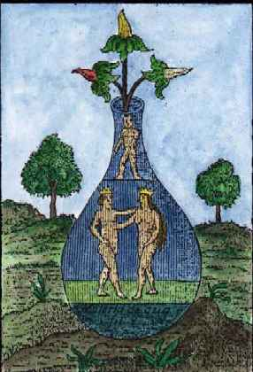
planche III, bisIci, la couleur des fleurs est évidente : blanche, jaune et rouge. Les époux royaux trempent dans le Lion vert qui tient le milieu, comme on voit, du matras virtuel. La Diane n'est pas aussi hermétique que sur la planche III, mais l'exotérisme manifesté par la planche III, bis rend bien compte de ce qui est caché par Duenech.
19. C'est une chose curieuse : la putréfaction est regardée par Aurach comme préparant le Soufre...Mais les disciples d'Hermès [Lettre aux vrais Disciples d'Hermès de Limojon] auront compris que la noirceur est la voie royale conduisant au diadème orné de rubis, celui que nous présente, par exemple, Michel Maier, dans l'emblème de son Atalanta, XXXI.
20. Ce passage s'inspire de Platon. Comment un alchimiste ne serait-il pas néo-platonicien ? Tout le Timée est imprégné de la transformation des éléments réciproques. E. Chevreul avait parfaitement saisi toute la portée de Timée [Résumé de l'Histoire de la Matière]. Tout le régime de l'oeuvre qui, au vrai, est unique, consiste tout uniment en une Coction progressive, qui consiste cuire et décuire, c'est-à-dire à appliquer la technique des bains écossais. C'est ce que les alchimistes ont résumé par la formule Solve et coagula, désormais emblématique de leur Art. Tout consiste à fondre des substances dans un tiers-milieu qu'ils ont nommé leur Eau permanente. Et le procédé, l'artifice dont parle Fulcanelli dans les Demeures Philosophales, va consister à mettre les substances sans dessus dessous, c'est-à-dire à tournebouler le vase de nature.
21. Il est très rare que les alchimistes évoquent en clair leurs matières. Or, Aurach se montre prodigue en son discours. Si nous comptons bien, il n'y a guère que Batsdorff, dans son Filet d'Ariadne, Albert Le Grand, dans le Composé des Composés, Cyliani, dans l'Hermès Dévoilé, le pseudo Flamel, dans le Désir Désiré ; ou encore Raymond Lulle [pseudo] dans l'Elucidation du Testament, Basile Valentin, dans les Douze Clefs de Philosophie. Nous citerons aussi Limojon de Saint Didier, dans son Triomphe Hermétique, qui a droit à une mention spéciale de la part de Fulcanelli, puisque l'illustre Adepte écrit dans le 2ème volume des Demeures Philosophales :" Limojon de Saint-Didier assure que ce feu est de la nature de la chaux." [DM, II, p. 74]
On peut même affirmer que ce passage se trouve ici :
Les sages n'ont pas esté moins reservez touchant leur feu que touchant leur matiere; de sorte qu'il n'est pas en mon pouvoir de rien adjouter à ce que je viens de vous en dire. Je vous renvoye donc à Artephius, et à Pontanus. Considerez seulement avec application, que ce feu naturel est neanmoins une artificieuse invention de l'artiste; qu'il est propre à calciner, dissoudre, et sublimer la Pierre des Philosophes; et qu'il n'y a que cette seule sorte de feu au monde, capable de produire un pareil effet. Considerez que ce feu est de la nature de la chaux et qu'il n'est en aucune maniere estranger à l'egard du sujet de la Philosophie. Considerez enfin par quels moyens Geber enseigne de faire les sublimations requises à cet art: pour moy je ne puis faire davantage, que de faire pour vous le même souhait, qu'a fait un autre Philosophe: Sydera Veneris, et corniculatæ dianæ tibi propitia sunto. [Triomphe Hermétique]Dans la dernière phrase, Limojon fait référence à Vénus et à Diane. Ce n'est certes pas la Vénus-Aphrodite qui est évoquée ici, mais la Virgo paritura, telle qu'elle nous est peinte dans la planche III, et telle qu'elle nous est suggérée, planche III, bis. Les cornes de Diane forment le ménisque lunaire du matras de la planche III. Poursuivons. Le pseudo Lulle parle de notre chaux, dans sa Clavicule [il en parle ausi dans l'Elucidation du Testament]. Jean d'Espagnet - dont on ne dira jamais assez l'importance dans la compréhension de l'Art sacré, donne des lumières, là-dessus, dans le chapitre XLIX de son Oeuvre Secret. Isaac Le Hollandais, dont Chevreul dit tant de bien, semble nous parler aussi des chaux dans son Oeuvre de Saturne. Ripley n'est pas en reste, et dans son opus magnum, les Douze Portes, il professe l'intérêt des chaux métalliques dans sa Première Porte, et dans un chapitre spécial, attenant aux Erreurs de l'auteur, qui présente un intérêt tout particulier [à l'instar des préfaces et des notes de bas de page des ouvrages de Fulcanelli et d'E. Canseliet]. Même la Tourbe, d'habitude si absconde, daigne livrer quelque lueur dans ce passage :« On croirait entendre Zosime quand Pythagoras déclare: " Sachez que les chaux sulfureuses, les aluns et le kohol (sulfure d'antimoine) ne sont rien d'autre que des eaux sulfureuses (l'eau divine de l'Alexandrin)." [...] »
22. La putréfaction. Ce terme voile une opération qui s'appelle l'oeuvre au noir [dont Marguerite Yourcenar a tiré la susbtance d'un roman absolument remarquable qui n'a rien à envier au Nom de la Rose, d'Umberto Eco]. La technique consiste à faire une séparation. En chimie ancienne, on parlait du Caput mortuum : il s'agissait de résidus qui restaient au fond de la cornue ; ainsi les fèces de la préparation de l'eau-forte [aqua fortis, acide nitrique, acide azotique] ont-elles un certain intérêt dans l'Art sacré. La préparation de l'acide azotique est connue au moins depuis Geber. Cette séparation chimique a le mérite de donner une explication physique de ce qui se produit, par exemple, quand on fait réagir un vitriol avec du nitre. On aurait tort, hélas, de croire qu'il s'agit de l'unique putréfaction. En effet, à en croire Fulcanelli et surtout Goerges Le Breton, il y aurait quatre putréfactions dans le Magistère. Certaines semblent d'authentiques séparations, d'autres sont des sortes de synthèses mentales, comme aurrait dit Chevreul, c'est-à-dire des allégories. La phase de putréfaction, telle qu'elle nous est rapportée dans les textes, rend compte en fait de l'immersion initiale des natures métalliques dans le Mercure des sages.
La planche 4 montre, quant à elle, l'homme double igné de Basile Valentin. C'est Janus, le Rebis, l'Airain philosophique. Il s'agit du résultat de la putréfaction qui est montré ici. Variante :
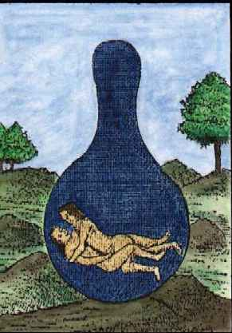
planche IV, bisNous voyons sur cette gravure le couple alchimique enlacé, signant l'une des phases de la conjonction. Notez que le matras, ouvert jusqu'à présent, est fermé. Certains alchimistes ont appelé cette fermeture le sceau vitreux d'Hermès. Il semble s'agir ici de la 3ème phase de la conjonction, d'après le Rosaire ; voici ce que dit le pseudo-Aristote :
" Tout d'abord on a la vraie matière dans le lion vert, de la couleur qui est la sienne. Et on l'appelle Adrop, Azoth ou Duenech vert. Au deuxième degré on a la même chose, et au troisième les corps se dissolvent dans l'argent-vif des philosophes, c'est-à-dire dans l'eau de notre Mercure, et il se fait un corps nouveau. " [Rosaire des Philosophes]
Voici ce que dit Dom Pernety de cette conjonction :
Conjonction. Réunion des natures répugnantes et contraires en unité parfaite. Cette conjonction les convertit tellement l’une en l'autre qu’elle en fait un mariage indissoluble même à la plus grande violence du feu. Les Philosophes définissent encore cette conjonction, un assemblage et une réunion des qualités séparées, ou une adéquation des principes. Riplée.Pernety cite Ripley qui a écrit [Douze portes] un traité entier sur les opérations du 3ème oeuvre. Il n'est pas aisé de décrypter quelles sont les opérations et les substances qui sont requises pour l'opération de la triple conjonction. Nous sommes d'accord avec Pernety lorsqu'il énonce que la 1ère se fait entre le mâle et la femelle. C'est la préparation du Rebis, chose double ignée, que l'on voit à la planche IV. Les autres acceptions qu'il donne sont à notre avis inexactes ou mal placées. La 2ème conjonction recouvre le Mercure philosophique, là où les trois matières coexistent [Corps, Âme et Esprit]. La réduction de ces trois principes à l'unité a été symbolisée dans la Chrysopée de Cléopâtre, par le serpent Ouroboros qui se mord la queue. Quant à la 3ème, elle fait intervenir le niveau élémentaire de Platon. On retrouve le Mercure qui est une eau visqueuse, ardente et volatile. C'est là la véritable acception hermétique qu'il faut donner à ces quatre Eléments réunis en un seul [que les scholastiques médiévaux ont appelé quintessence ; voir l'Oeuvre Secret de Jean d'Espagnet]. Enfin, la dernière définition que Pernety donne de la conjonction a notre complet agrément et illustre les planches suivantes du Donum Dei.
Il y a trois especes de conjonction.
La Premiere est appelée double. Elle se fait entre l’agent et le patient, le mâle et la femelle, la forme et la matiere, le mercure et le soufre, le subtil et l’épais.
La seconde s’appelle triple, parce qu’elle réunit trois choses, le corps, l’âme et l’esprit. Faites donc en sorte de réduire la trinité à l’unité.
La troisieme est dite quadruple, parce qu’elle réunit les quatre éléments en un seul visible, mais qui renferme les trois autres. Souvenez-vous, dit Riplée, que le mâle a cinq vaisseaux requis pour la fécondité, et la femelle quinze. Sachez donc que notre Soleil doit avoir trois parties de son eau, et notre Lune neuf.
CONJONCTION signifie aussi l’union du fixe et du volatil, du frere et de la sœur, du Soleil et de la Lune. Elle se fait pendant la noirceur qui survient à la matiere pendant la putréfaction. Les Philosophes l’appellent aussi Conception, Union des élémens, Commixtion. [Dictionnaire Mytho-hermétique]
23. Les Artistes parlent souvent d'oiseaux qui volent sans aile. Philalèthe parle des colombes volant sans aile, qui ont été trouvées dans la forêt de Vénus. On doit s'imaginer que des substances dissoutes dans le Mercure, y sont en fait - par cabale - en état de sublimation. Voici, par exemple, ce qu'en dit Basile Valentin :« C'est le principe pour oeuvrer sur les métaux, après qu'il a abouti à une essence spirituelle qui est un poison achevé; volant sans ailes çà et là c'est un vent agitant, qui expulsé de son domicile par Vulcain est poussé de force dans son chaos » [Traité des Choses Naturelles et Supernaturelles, chap III]
C'est le Mercure animé [le véritable Mercure philosophique] que Basile a en vue. Notez bien la distinction entre le Mercure simple et le Mercure composé. Le premier et au vrai, le véritable 1er Mercure des philosophes et l'autre, le double Mercure : c'est proprement alors le Mercure philosophique dans lequel sont, volant sans ailes, les deux colombes de Diane. Le 1er Mercure n'est donc rien en lui-même et il n'agit que comme héraut, intercédant entre les deux extrémités du vaisseau de nature. Philalèthe fait allusion à ce corps mystérieux, dans l'Entrée Ouverte au Palais Fermé du Roi :
« Que Diane ici te soit propice, qui sait dompter les bêtes sauvages et dont les deux colombes (qui ont été trouvées volant sans ailes dans les bois de la Nymphe Vénus) tempéreront de leurs plumes la malignité de l'air » [Introïtus, VI]
Le grand et fabuleux Artéphius place aussi cette expression dans son Livre Secret :
« Et partant on dit que la pierre naît sagement en l'air, parce qu'elle est entièrement spirituelle. Car ce vautour volant sans ailes, crie sur la montagne, disant : je suis le blanc du noir, et le rouge du blanc, et le citrin enfant du rouge, je dis vrai, et ne mens point. »
Le vautour est un oiseau dédié à Isis ; on remarquera la parenté du texte du Donum Dei à cet endroit, avec le Livre Secret. Pontanus n'est pas en reste dans son Epître [Pontanus et Artéphius sont cités par Fulcanelli comme ayant parlé clairement - sic ! - du Mercure] :
« ll naît de moi un Oiseau admirable, qui de ses os, qui sont mes os, se fait un petit nid, où, volant sans ailes, il se revivifie en mourant, et l'Art surpassant les lois de la Nature, il est à la fin changé en un Roi, qui surpasse infiniment en vertu les six autres. »
Pontanus fait ici parler le Mercure. Dans la section Matière, nous avions été conduit à identifier cet oiseau au Phénix [qui renaît de ses cendres], mais il semble que cet oiseau soit bel et bien le vautour. Enfin, Salomon Trismosin cite le Grand Rosaire, dans sa Toyson d'or, qui reprend à peu près les mêmes termes :
« Nous tenons pour maxime véritable, que la tête de notre Art est un corbeau volant sans ailes en l'obscurité de la nuit aussi bien qu'en la clarté du jour. »
Et ici, l'oiseau est un corbeau, ce qui s'accorde avec le texte d'Aurach. Plus loi, Trismosin revient sur cet « esprit qui vole sans aile » :
« [...] qualifiant cette terre spiritualisée de divers noms selon la succession des couleurs et les diverses opérations de cet esprit volant sans ailes, en sublimant et rectifiant jusqu'au fond toute la masse qui se décroît [...] »
On trouve encore une référence sur cet oiseau chez Hermès [Aurach a prévenu qu'il calquait son discours sur celui du Trismégiste] :
« Scachez aussi que le corbeau qui vole sans ailes dans la noirceur de la nuit et dans la clarté du jour, est la tête ou le commencement de l'art » [Les Sept Chapitres, Hermès]
Et il est clair qu'ici, cet esprit ne peut être le phénix, puisque nous en sommes encore à la période de putréfaction : il s'agit donc du vautour ou du corbeau, qui sont ici des oiseaux congénères. Cette expression n'apparaît pas dans les Fables Egyptiennes et Grecques, mais dans le Dictionnaire, à l'article vautour :
Vautour. Oiseau de proie très vorace, tenant de la nature de l'aigle. Les Anciens avaient consacré le vautour à Mars et à Junon. Apollon fut appelé Vulturius, ou Apollon aux vautours. La Fable nous représente Prométhée attaché à un rocher du Mont Caucase, et déchiré par un vautour, pour avoir volé le feu du ciel. Ces allégories font allusion à l'eau mercurielle ignée, chaude et volatile, qui en dissolvant le fixe, appelé mine de feu céleste par quelques Philosophes, semble le dévorer. Voyez PROMETHEE. Hermès a fait la même allusion, lorsqu'il a dit : je suis le vautour perché au haut de la montagne, qui crie sans cesse; aide-moi, je t'aiderai. Le même Auteur ajoute : Je suis le blanc du noir, le citrin du blanc, et le rouge du citrin, pour indiquer les couleurs successives de l'œuvre. VAUTOUR volant sans ailes. Mercure des Philosophes.Sur le vautour, voir Fontenay.
24. La traduction de ce passage laisse sans doute à désirer. Mais il est clair que l'âme est extraite de ce laiton initial, qu'il faut blanchir.
25. Il est possible que soient ici désignées les couleurs de la queue de paon [voyez Huginus à Barma, les Douze Portes, la section Fontenay, la Nouvelle Lumière chymique, sur le paon]. Ces irisations semblent signaler la fin de la phase de putréfaction, marquée par le régime de Jupiter, dont la couleur serait le gris selon Pernety [Fables].
26. la tête de corbeau nous renvoie à nos premières études alchimiques. Cette tête est associée à l'Occident, aux ténèbres, à l'éclipse de Raymond Lulle, à la lèpre, etc. Pernety a recensé plus de 50 appellations de cette énigme. Quoi qu'il en soit, les alchimistes semblent s'accorder sur le fait qu'une fois que les matières ont été scellées du sceau vitreux d'Hermès dans le vase de nature, il faut XL jours pour qu'apparaisse cette noirceur. Albert Le Grans en parle comme :« [...] Laton immonde, résidu noir, Airain des philosophes, Nummus, Soufre noir, mâle, époux, etc. Malgré cette infinie variété de noms, ce n'est jamais qu'une seule et même chose, tirée d'une seule matière. » [Composé des Composés]
A notre sens, les termes de mâle ou époux sont ici usurpés. Il semble qu'il s'agisse d'une véritable substance pulvérulente, d'une terre que Fulcanelli a assimilé au poussier de charbon [Mystère des Cathédrales]. Hesteau de Nuysement situe cette période de l'oeuvre exactement au même stade qu'Aurach :
« Dans leur premier chaos très profondément.
Et puis toutes ces substances se noircissent,
Comme fait la suie dans la cheminée ;
Ce qui se nomme la tête de corbeau,
Lequel n'est pas une petite marque de la grâce de Dieu.
Quand donc cela sera ainsi advenu, vous verrez en bref
Des couleurs de toutes les manières,
La rouge, la jaune, la bleue et les autres,
Lesquelles néanmoins disparaîtront bientôt toutes.
Et vous verrez après de plus en plus
Que toutes choses deviendront vertes, comme feuilles et comme l'herbe.
Puis enfin la lumière de la Lune se fait voir » [Traité du Sel, Discours traduit de Vers]Il semblerait que cette tête de corbeau soit le signe de la première conjonction :
« L'indice de cette fécondation est cet Aleph ou commencement ténébreux que les Anciens ont appelé tête de corbeau » [Huginus à Barma]
De son côté, E. Canseliet a rapproché le corbeau du chien de Corascène :
« le vocable Khorassan, du grec Korax, corbeau, évoque l'origine de cette âme métallique...extraite de la partie ténébreuse...[désignée]...par l'expression tête de corbeau. » [Deux Logis Alchimiques, les Deux chiens]
où le Soufre rouge est défini et symbolisé par le chien du Corascène, la chienne d'Arménie désignant le Soufre blanc ou Sel. Voyez encore ce que nous disons du corbeau à Fontenay. Il semble, de plus, y avoir un rapport de cabale entre cette tête de corbeau et l'Hydre de Lerne [l'allégorie semble tourner autour de l'élection ou de la capture du soufre rouge approprié].
27. La planche V montre un anneau noir surnageant le fond de la cornue.
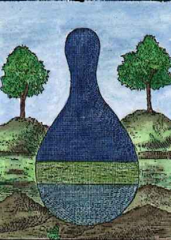
planche V, bisLa planche V, bis, variante de la V, montre un anneau vert qui évoque le Lion Verd de Jacques Le Tesson et de Ripley. Notez que le vase st clos alors qu'il est ouvert à la planche V. Il est pratiquement impossible de savoir ce que les Adeptes entendent par leur terre noire féculente. Seul Limojon de Saint-Didier semble en parler :
« [...] lorsque par la distillation nous tirons l'eau, qui est l'ame et l'esprit, le corps demeure au fond du vaisseau, comme une terre morte, noire, et feculente, laquelle neanmoins, n'est pas à mépriser; car dans notre sujet, il n'y a rien qui ne soit bon. » [Le Triomphe Hermétique]
On peut seulement supputer qu'il s'agit du résidu d'une distillation. Mais il ne s'agit pas d'une distillation vulgaire. Faut-il alors penser que cette distillation n'est autre que la coction, par laquelle l'Âme et l'Esprit forment le ciel firmamental d'un côté, et le Sel incombustible, la salamandre, de l'autre côté ? Nous n'oserions l'affirmer.
28. Pernety laisse entendre que sous les termes de corruption ou de putréfaction, les alchimistes entendraient une calcination. Par ailleurs, il se pourrait que cette corruption cache les cendres des Mixtes, c'est-à-dire des chaux métalliques, ce qui éclairerait d'une nouvelle lumière les expériences par la voie sèche. Morien, dans ses Entretiens à Calid, aurait même dit que ces cendres constituaient le diadème du Roi [voyez Atalanta, XXXI]. Dès lors, il n'est pas impossible d'imaginer que sous l'oeuvre au noir, du moins à son début, se cache la préparation des cendres des végétaux, ce qui constituerait la partie végétale de l'oeuvre et la raison pour laquelle la couleur noire est rapportée à la TERRE. C'est ce que semble dire Jean d'Espagnet dans sa Philosophie Naturelle Restituée :« On peut remarquer dans l'humide radical quelque chose d'immortel, qui ne s'évanouit point par la mort, et qui ne se consume point par tous les efforts du feu le plus violent, mais qui demeure dans les cadavres, et dans les cendres des corps brûlés, sans pouvoir être détruit par le feu [...] » [chap. CCXV]
29. le régime de Jupiter dure 21 jours. Il assure la transition entre le régime de Saturne et celui de la Lune. Il est donc curieux de voir figurer Jupiter dans l'oeuvre au noir, à moins qu'il s'agisse d'un raccourci pour faire voir que le but de l'opération est l'obtention du second Mercure.
30. Aurach semble évoquer l'Eau permanente, c'est-à-dire le Mercure contenant les natures métalliques et c'est une phase à laquelle il donne la couleur blanche.
31. La planche VI montre une tête de corbeau obstruant le matras. On voit dans la matière des « vers » qu'on appellera serpents. Variante :
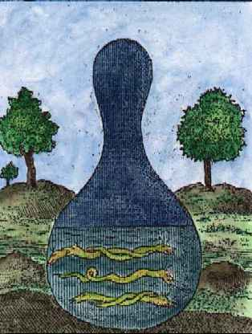
planche VI, bisAlexandre Sethon s'est exprimé sur les vers évoqués dans ce texte, à la période putréfaction :
« De même en l'œuvre philosophique, la mère de cette chose est ton Eau que nous avons tant de fois répétée ; et tout ce qui naît de cette Eau, naît à la façon des vers par putréfaction. C'est pourquoi les Philosophes ont créé le Phoenix et la Salamandre. » [Nouvelle Lumière Chymique]
Sethon anticipe sur les régimes ultérieurs. Il est clair, toutefois, que la salamandre symbolise le SEL incombistible, et que le phénix est le signe du Soufre réincrudé. Dire que la corruption de l'un amène génération de l'autre signifie que c'est le Mercure qui va servir de nourrice pour le Soufre.
32. Cette durée de 40 jours est signalée par plusieurs auteurs. Nous en avons parlé dans l'humide radical métallique. Le chimiste Nicolas Lefèvre évoque une préparation pour laquelle 40 jours sont requis. Il s'agirait pour lui, du vrai soufre de l'or. En fait, il ne s'agit que d'un sesquichlorure d'or. Mais il ne semble pas que la vérité soit là. La difficulté du passage réside dans le fait qu'on ne sait pas au juste si Aurach parle ici de la voie sèche ou de la voie humide. S'il s'agit de la voie sèche, tout ce qui est dit ici doit se comprendre par l'allégorie et la matière est une sorte de vitrification dont nous avons parlé ailleurs. S'il s'agit de la voie humide, nous sommes alors dans l'impasse car aucune réaction chimique ne peut conduire à ce que l'alchimiste écrit [et qui est à mettre sur le même plan, ou un plan voisin de la sublimation de Georges Ripley, des régimes planétaires que donne Sethon dans sa Nouvelle Lumière Chymique ou encore de ce que dit Synésius, dans son Vray Livre, etc.]. On ne saurait se fier à Pernety qui assure, dans les Fables Egyptiennes et Grecques, que Pline le Naturaliste aurait dit que le mois philosophique était de 40 jours [sic !]. On pourrait encore évoquer cette légende d'Egypte, que rapporte aussi Pernety :Lorsque ce Bœuf est mort (Diodor. l. i. c. 4.), & qu’il a été magnifiquement inhumé, des Prêtres commis pour cela en cherchent un semblable, & le deuil du peuple cesse lorsque ce Taureau est trouvé. Les Prêtres à qui l’on confie ce soin, conduisent le jeune animal à la ville du Nil, ou ils le nourrissent pendant quarante jours. Ils l’introduisent ensuite dans un vaisseau couvert, dans lequel on lui a préparé un logement d’or, & l’ayant conduit à Memphis avec tous les honneurs dus à un Dieu, ils le logent dans le temple de Vulcain. [Fables]On croirait lire une véritable allégorie alchimique...Grosparmy, dans le Trésor des Trésors [resté semble-t-il non imprimé] écrit en substance que la matière sera putréfiée et transformée en eau au bout de 40 jours. Basile Valentin, dans le Char Triomphal de l'Antimoine dit :« Prenez de l'antimoine de Hongrie crud. Pilez-le et le mettez dans une cucurbite de terre. Versez dedans le vrai vinaigre des philosophes avec son sel. Lutez bien et putréfiez votre composé au bain-marie quarante jours de suite. Et vous verrez que le corps de l'antimoine s'ouvrira et fera la liqueur plus noire que l'encre [en principe, la couleur noire survient lorsque l'antimoine est à l'état métallique : par exemple, le fer, le zinc, l'étain précipitent le protoxyde d'antimoine à l'état métallique sous la forme d'une poudre noire], qui est le signe d'une solution parfaite. »
Alain de Lille revient sur cette durée de XL jours. D'après l'historien de la chimie Ferdinand Hoefer, la matière en question ne pouvait être que de l'oxyde de mercure et du mercure dans un état très divisé. Dans la Tourbe, on fait dire à Theophilus :
« Sachez tous fils de doctrine que le secret de tout est une couverture ténébreuse, de laquelle les Philosophes ont tant de fois parlé, et cette veste et couverture se fait ainsi. Faites de votre corps tablettes menues, et les cuisez avec le venin, deux à sept et deux, c'est tout. Cuisez-le en cette eau quarante jours, et tirez votre vaisseau, et vous trouverez le vêtement que vous demandez. »
Enfin, on trouve dans un texte de Tripied, Du Vitriol Philosophique, un extrait d'un texte de Le Crom qui semble s'appliquer à la préparation de l'acétate de fer.
33. la planche VII donne à voir le même matras [ce n'est pas un matras, bien sûr, mais l'athanor philosophique], avec un animal fabuleux où l'on peut deviner un griffon. Nous l'avons dit ailleurs [1, 2, 3, 4, 5, 6, 7, 8, 9, 10, 11, 12, 13,], le griffon est le sceau de la combinaison entre le fixe et le volatil : c'est un oiseau fabuleux à bec et à aile d'aigle, au corps de lion. Combien de fois avons-nous vu cette allégorie ? C'est l'un des secrets les plus hauts de l'oeuvre qui s'y cache. Celui de l'époque où le fixe l'emporte, puisqu'il faut toujours considérer que nous sommes en présence d'états instables [les symboles portés par des animaux évoquent presque toujours ce caractère de transition du passage d'un état de la matière dans un autre état]. Aigle et lion, voila aussi deux hiéroglyphes consacrés au soufre. Alors, comment lier cette tête de corbeau et ce soufre naissant ? Par le biais des phases de la conjonction, telle qu'elle nous apparaît dans le Rosaire.
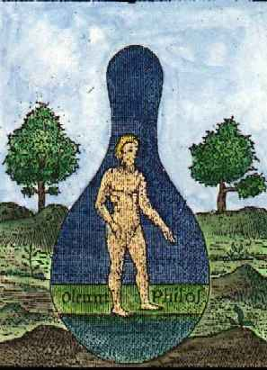
planche VII, bisMais c'est une version très différente qui nous est proposée dans cette variante. Au point que nous doutons que la même phase ait été représentée. Pourtant, il s'agit toujours du vase où le Mercure philosophique tient le milieu de l'athanor. Et l'inscription portant « OLEUM PHILOS. » lève l'équivoque et nous assure bien que dans ce Mercure, le Soufre est présent dans cette forme d'huile incombustible qui constitue la minière, à proprement parler, de la Pierre. Du reste, ce vieillard décharné qui nous est présenté [le Mercurius senex de Jung] montre que le temps est bientôt révolu, de cette période de dissolution. Pour en revenir à ce griffon, les Grecs en faisaient le gardien de trésors [toute la mythologie a employé ce symbolisme ; Wagner, dans Siegfried, emploie un dragon, Fafner, qui garde l'or des Nibelungen et l'anneau magique d'Alberich] et la monture d'Apollon. Autrement dit, nous devons voir dans ce griffon l'équivalent strict de Latone. Parce que tous les alchimistes prescrivent de blanchir Latone et de « brûler les livres », ce qui est une contresens, car il s'agit en fait de rompre l'écorce [voir Philalèthe là-dessus et nos Gardes du Corps].
34. Passage difficile à décrypter là encore. Le texte, d'ailleurs, souvent prolixe, donne l'impression d'être composite. Il y a là un mélange de voie sèche et de voie humide. Dissoudre l'or ne conduit évidemment pas à en obtenir la matière première mais la voie humide est le chemin vers les dissolutions auriques [l'or potable des vieux alchimistes ; voyez voie humide] et le pourpre de Cassius. Berthelot, dans son Introduction à la chimie des Anciens a, en outre, fait voir que les noms d'or et d'argent ne renvoyaient pas toujours aux métaux, mais à des minéraux. Toutefois, ce texte du Donum Dei présente des points communs avec la Tourbe des Philosophes et se ressent d'une influence des scholastiques médiévaux, lesquels, ne l'oublions pas, ont littéralement inventé la pierre philosophale et tout l'appareil d'une véritable théosophie minérale, laquelle a en partie liquidé la cabale hermétique traditionnelle pour y inclure des éléments propres au christianisme. Paracelse devait par la suite utiliser de façon assez géniale tout ce méli-mélo ésotérique. Lorsque Aurach nous dit qu'il faut faire de l'or, du soufre et de l'argent-vif, nous avouons notre perplexité. Car soit il ne sait pas ce qu'il dit, soit il verse dans l'alchimie chimérique des transmutations. Eh certes ! Ce n'est pas qu'il n'y ait des transmutations qui résistent à la critique. Lorsque nous avons parlé de la vie de martyre d'Alexandre Sethon, nous avons fait voir que le récit de ses transmutations avait été tronqué par Louis Figuier et que l'explication rationnelle loufoque qu'il en donnait tenait de l'escroquerie intellectuelle. Pourtant, à notre très grand regret, nous avons dit que nous ne pouvions retenir comme véridiques ces transmutations. Mais enfin, vouloir faire du soufre et de l'argent-vif, à partir de l'or, ne tient évidemment pas. L'alchimiste cherche de l'or dans les matières premières qu'il traite, mais, comme l'ont fait observer les plus grands Adeptes, il ne s'agit pas de l'or vulgaire, mais « philosophique ». Qu'est-ce à dire ? Pour nous, il ne fait point de doute qu'il doit s'agir de quelque principe de teinture [voyez Soufre]. Quant à l'argent-vif, il s'agit du Mercure, c'est-à-dire du vicaire [1, 2, 3, 4, 5, 6, 7,]. C'est l'association de l'argent-vif [et non du vif argent vulgaire] et du Soufre sublimé qui forme l'OLEUM VITRI. Cet huile est encore appelée Lait de Vierge par les Adeptes. « Prendre femme » signifie que le principe de teinture « pollinise » le principe CORPS de la pierre dont le résultat consiste en la formation de l'embryon métallique.
35. la planche VIII est davantage conforme à la tradition. Elle annonce la séparation de l'âme [anima] et du corps [corpore]. Ce qui, a priori, semblerait illogique, puisque ce que l'on veut faire, c'est précisément lier l'âme [Soufre rouge, teinture] au corps [Soufre blanc, résine de l'or] pour en faire la Pierre. Le matras est toujours surmonté d'une tête de corbeau. En fait, les alchimistes sont restés muets sur cette opération et le Rosaire ne l'aborde que sous le rapport des différentes phases e la conjonction. Voyez Ripley là-dessus. Il est possible que sous toute cette allégorie se cache un processus physico-chimique où un corps amorphe se transforme en un corps cristallisé ; ou encore qu'un sulfate se transforme en un oxyde. On peut poser en hypothèse que les précipités amorphes produits par certains sels solubles et les dissolutions métalliques ne sont pas absolument insolubles dans les liqueurs salines, acides ou alcalines dans lesquelles ils sont formés. Si alors, par un abaissement de température, par exemple, leur solubilité vient à diminuer, une partie de la substance dissoute cristallise sur les parois du verre on même sur la substance amorphe ; une élévation de température, au contraire, détermine la dissolution d'une partie de la substance amorphe bien plus facile à dissoudre que les cristaux, de telle sorte que, par une série de variations, si faibles qu'on le voudra, mais continues, dans le pouvoir dissolvant du liquide, la matière amorphe tout entière devra s'agglomérer en cristaux. Ce transport d'une matière amorphe vers une substance cristallisée par l'intermédiaire d'un dissolvant est l'analogue de celui qui s'effectue dans les phénomènes observés dont nous avons rendu compte, à propos des expériences de M. H. Sainte-Claire Deville [voyez réincrudation]. Nous rejoignons ici le problème fondamental que les alchimistes ont posé comme la question du poids de nature, comparé au poids de l'art. Si l'on suppose deux cristaux de poids P et P' différant seulement par les dimensions et pouvant être considérés à peu près comme des polyèdres semblables et que ceux-ci sont placés dans une solution saturée de leur propre substance dont la masse est indéfinie et dont la température s'accroît graduellement. Si la solubilité de la matière augmente avec la température, comme on peut l'admettre, ces deux cristaux vont, dans un temps très court, perdre des poids p et p' qui ne seront plus les mêmes lorsqu'ils s'accroîtront au moment où la dissolution reprendra sa température primitive. C'est la loi de décroissement et d'accroissement de ces cristaux qu'il s'agit d'établir. Et c'est ainsi que l'on peut résoudre cette question de « poids de nature » sur lequel l'Artiste ne peut évidemment pas avoir d'action. Quoi qu'il en soit, toutes les fois que l'on soumettra des cristaux baignant dans un liquide saturé à des alternatives de température, les cristaux tendront à se réduire à un seul en général, pourvu que le mouvement continuel du liquide y maintienne une composition constante dans toutes ses tranches. On observe ainsi, dans des expériences de spagyrie élémentaire faites dans les laboratoires, des cristaux qui grossissent en vases fermés. De là l'idée, émise par Sainte-Claire Deville que des matières insolubles, ou plutôt considérées comme insolubles, pourraient être transformées en gros cristaux par l'action prolongée du temps et des changements de température. On conçoit dès lors que ce système puisse s'appliquer dans la nature à faire concevoir le développement des masses cristallisées que déposent les eaux minérales ou les émanations diverses servant ou ayant servi au remplissage des filons. Toute variation de température doit, en effet, déterminer le transport de la matière des petits cristaux ou même de la matière amorphe sur les gros cristaux ou sur les cristaux déjà formés. A cela vient s'ajouter le rôle des agents minéralisateurs, de l'eau surchauffée sous pression dont nous avons parlé dans la section Mercure de nature.
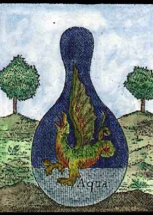
planche VIII, bisLa variante se rapproche trait pour trait de la planche VIII. On y voit le dragon s'épaissir et blanchir. Le régime du feu, bien conduit, permet de passer de Saturne à la Lune en transitant par Jupiter. Lorsque Aurach nous dit que le dragon dévore ses ailes, Fulcanelli évoque le même concept quand il examine l'un des caissons du château de Dampierre-sur-Boutonne où l'on voit un cygne perché d'une flèche où le phylactère indique : « je meurs par mes propres plumes ». Il est question ici de la volatilisation progressive du Mercure. Notez qu'ici cette phase semble démarrer lors même de la période de putréfaction comme en témoigne la tête de corbeau.
36. L'image, ici, exprime bien mieux que le texte ce qui a été dit note 35. L'idée générale semble être que des couleurs intermédiaires multiples seraient visibles entre le NOIR et le BLANC. Ces couleurs, les alchimistes les ont voilées par celles qui sont visibles sur la queue de paon.
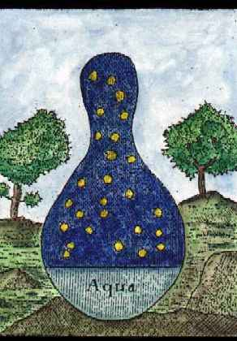
planche IX, bis
Il semble qu'ici la réincrudation débute, c'est-à-dire que le Soufre, auparavant dissous dans le Mercure, atteigne ce degré de sursaturation dont on a parlé note 35, degré nécessaire pour que la cristallisation survienne. Les alchimistes voilent cette opération sous l'allégorie de Latone qui accouche sur Délos de Diane d'abord et d'Artémis ensuite. On peut même ajouter que la cristallisation s'opère de façon plus rapide au fur et à mesure que les cristaux se constituent, ce que les alchimistes, à nouveau, ont voilé sous la fable de Diane aidant Latone à accoucher d'Apollon. Notez que l'image du roi revenant du feu est évoquée dans l'emblème XXIV de l'Atalanta fugiens. Ainsi peut-on considérer comme équivalentes le Roi couronné revenant du feu et les taches lumineuses qu'on observe à la planche IX, bis. C'est, au juste, le retour des cendres [cf. Atalanta, VI].
37. Plusieurs alchimistes parlent du « plus noir que noir » pour signifier cette sorte de lumière qui jaillit des ténèbres [cf. Lux Obnubilata...]. Ils appellent cette couleur singulière le nigrum nigro nigrius. Basile Valentin, dans son Char Triomphal de l'Antimoine écrit :« Et vous verrez que le corps de l'antimoine s'ouvrira et fera la liqueur plus noire que l'encre, qui est le signe d'une solution parfaite. »
Clovis Hesteau de Nuysement écrit de même dans son Traité du Sel :
« [...] 12. Le vif. 12. Le Mort.
13. L'Eau-de-vie. 13. Le noir plus noir que le noir.
14. Le froid humide. 14. Le chaud sec. [...] » [ chapitre IV : Comment notre Sel est divisé en quatre Eléments selon l'intention des Philosophes]Les n°12 et 13 sont une indication sur le Soufre dissous dans le Mercure. Paracelse enseigne que :
« [...] les matériaux idoines seront trouvés en Hongrie. Lili doit, dûment préparé dans le pélican, passer par les couleurs dans l'ordre requis, c'est-à-dire devenir plus noir que le corbeau, puis, plus blanc que le cygne, puis, jaune, enfin, plus rouge que le sang, jusqu'à ce que Lili ait acquis les propriétés de la Salamandre » [De la teinture des physiciens, chap. II, attribué à Paracelse].
Jean d'Espagnet, dans son Oeuvre secret d'Hermès, traite de cette partie de l'oeuvre avec sa maîtrise habituelle :
« [...] La première, c'est la noire, qui est appelée la tête de corbeau, à cause de l'extrême noirceur qui arrive avec elle dans la matière ; son crépuscule et sa blancheur défaillante indiquent le commencement de l'action du feu de la nature, ou le commencement de la dissolution ; mais sa nuit la plus noire indique la perfection de la liquéfaction et de la confusion des éléments. Alors le grain commence à pourrir et à se corrompre, afin d'être plus propre à la génération. A la couleur noire succède la blanche, où gît la perfection du premier degré, celle du soufre blanc [...] » [Les milieux et les extrêmes, § 64]
Voyez aussi les Douze Portes de Ripley où nous donnons un extrait où Pernety donne toutes les acceptions se rapportant à l'expression « plus noir que le noir ». Le laiton blanc est encore appelé l'airain blanc. Le col du vaisseau est une expression de cabale. Batsdorff en parle dans son Filet d'Ariadne :
« Le premier Sceau se fait en faisant fondre le col de l'œuf, qui est de verre, pour lequel il faut donner le feu de fusion peu à peu, mettant entre le feu et l'œuf une tuile percée ; et lorsqu'on voit que le col du vaisseau commence à s'incliner par la chaleur qui le fond, il faut avoir des ciseaux qui soient forts, et couper le col de ce vaisseau par l'endroit où le verre est comme coulant [...] » [des Sceaux d'Hermès]
Nous n'insisterons pas sur la colombe [cf. Philalèthe] et sur le phénix [cf. Blasons alchimiques].
38. A propos des cendres, voilà ce que dit Pernety :Cendre. Les Sectateurs de la science Hermétique appellent souvent cendre la matière de la pierre putréfiée dans l’aludel, parce que la chaleur extérieure agissant sur le mixte du vaisseau, en sépare l’humide qui en liait les parties, et après l’avoir desseché, laisse le mixte comme une poudre, ou cendre, et la matiere dans cet état est en putréfaction ou corruption; car l’un et l’autre terme se prennent indifférem-ment pour signifier la même chose.On aura donc garde de confondre ici la cendre telle que les alchimistes l'utilisent dans la confection du Mercure et son « retour », qui marque la réincrudation. Notons enfin que ce passage est transcrit, pour partie, du Désir Désiré attribué à Nicolas Flamel :
Les Philosophes Hermétiques disent qu’il ne faut pas mépriser la cendre, et Morien dit qu’elle est le diadême du Roi. Il faut entendre ces termes de la matière après qu’elle a été en putré-faction; parce qu’alors elle semble de la cendre, et que de cette cendre doit sortir le soufre philosophique, qui est le diadême du Roi.« C'est pourquoi Morien dit aussi : ne méprisez pas la Cendre, car elle est le Diadème de votre cœur, et une Cendre permanente [...] »
Il est clair que cette cendre permanente est le SEL incombustible des Sages, l'écrin de l'or, la résine du Soufre, le christophore, en un mot.
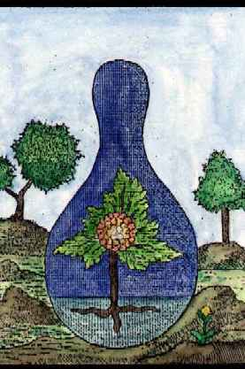
planche X, bisIci, la planche X, bis exprime mieux l'opération en cours que la planche X, quelque peu énigmatique. Toutefois, on remarquera que la tête de corbeau a disparu, preuve que la blancheur de la planche IX a été dépassée. On voit un arbre qui prend sa racine dans le Mercure ; il y a trois racines. La fleur symbolise la Pierre et a tout de la grenade hermétique. Quant à l'alliance entre la TERRE et l'EAU, elle ne tient pas compte du schéma hermétique des correspondances entre les quatre Eléments. Cette alliance, en fait, va produire une TERRE dans laquelle un FEU est fait prisonnier et fixé. Nous aurons donc l'équation [cf. cristallogénie] :
TERRE + FEU = EAU + AIR
où l'on voit apparaître une équivalence entre d'un côté, les éléments constitutifs de la Pierre, et de l'autre, ceux constitutifs du Mercure [EAU + AIR].
39. Passage obscur avec de notables redondances. Quelque mouvement de convection y est évoqué. La traduction du texte doit laisser à désirer...L'ensemble évoque une sorte de récapitulation décousue. Sur la sueur, voyez Atalanta fugiens III, XXVI, XXVIII.
40. Nous tombons ici dans les élucubrations des textes. Notez que tout repose sur le mot élixir. Ce mot n'a pas la même acception selon les traités. Pour les uns, il s'agit du Mercure philosophique parvenu au régime de la Lune ; pour d'autres, il correspond à la « Pierre au blanc ». L'élixir blanc est évoqué par Batsdorff :« En ce même temps, dis-je, l'âme entre dans son corps, et la teinture s'y joint aussi : cette union de l'âme au corps est une œuvre divine, parce que cela dépend de Dieu seul et de la Nature dans laquelle il agit ; et ce temps est celui auquel Morien dit qu'il y aura de grandes merveilles, qui est celui de la déalbation, auquel l'âme entrant dans son corps, le fixe et l'élève en une teinture permanente au blanc et au rouge ; savoir, au blanc dans son extérieur, et au rouge dans son caché : et cet Elixir blanc en son manifeste qui contient l'or en son occulte, est l'or blanc des Philosophes [...] » [chap. VI, Filet d'Ariadne]
C'est le début de la réincrudation qui est évoqué. L'âme est la teinture ou Soufre rouge ; le corps est le Soufre blanc ou Arsenic de Geber [ou Sel de Paracelse]. Albert Le Grand, dans son Composé, a une définition un peu différente de l'élixir blanc :
« Sachez que l'esprit, caché dans le soufre, l'arsenic et l'huile animale, est appelé par les philosophes Elixir blanc. Il est unique, miscible à la substance ignée, de laquelle nous tirons l'Elixir rouge [...] »
Sa définition se rapproche de la nôtre, néanmoins. En effet, au régime de la Lune, l'esprit désigne donc le Mercure dans lesquels les Soufres [soufre, arsenic, huile animale] sont en cours de réincrudation. Notez que lorsque les alchimistes disent que leur pierre est « animale, végétale, minérale», ils veulent entendre par là que cette Pierre contient une âme [anima] et qu'elle est issue d'un principe de génération [vegetus, force vitale, principe de vie] que l'on peut traduire, en termes modernes, par agent de minéralisation. Enfin, elle est minérale dans le sens où sa forme est cristalline. Le pseudo Flamel en parle dans ses Figures Hiéroglyphiques. Voyons ce que dit Pernety de l'élixir en général :
Elixir. (SC. Herm.) L’élixir n’est autre chose, selon le bon Trévisan, que la réduction du corps en eau mercurielle, et de cette eau on extrait I’élixir, c’est à-dire un esprit animé. Le terme Elixir vient étymologiquement de E et lixis, c’est-à-dire, de l’eau ; parce que dans l’œuvre tout se fait avec cette eau. [Dictionnaire]L'esprit animé n'est autre que le Mercure philosophique [Compost philosophal].
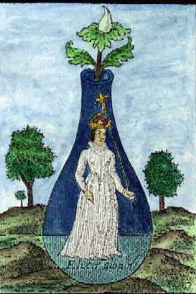
planche XI, bisLa planche variante ne diffère pas, sinon les couleurs, de la planche XI. Pernety ajoute dans son Dictionnaire, que :
Cet Elixir est composé de trois choses; savoir : de la pierre lunaire, de la solaire, et de la mercurielle. Dans la lunaire, est le soufre blanc; dans la solaire, le soufre rouge; et la mercurielle contient l’un et l’autre.On ne saurait être plus clair. Et, précisément, nous avons besoin des deux Soufres pour préparer la Pierre.
41. Les alchimistes ont mis tout leur esprit et leur humour dévastateur dans de telles phrases qui disent tout et rien à la fois. Comment, en effet, s'imaginer faisant du rubis avec Gabricus et Beja ?
42. Est-ce une opération sur la terre feuillée qu'il faut réaliser ? Et cette opération aurait-elle pour but de ne point brûler les fleurs ? Nous avons tâché de répondre à ces questions dans l'Atalanta fugiens VI, XI. Il n'est pas évident que cette terre des feuilles est des rapports avec la terre foliée de tartre...
43. Trait de cabale : la peur ou la crainte, en grec, se dit joboV. On connaît JoboV, fils d'Arès. Son frère est DeimoV [ce sont les deux satellites « patatoïdes » de Mars]. En proche assonance phonétique, on trouve Joibh, fille d'Ouranos et mère de Latone. Enfin, JoiboV, le « brillant », surnom d'Apollon. On voit ainsi de quelle manière perfide les Adeptes peuvent nous donner des renseignements sur certaines matières ou certaines époques de l'oeuvre, uniquement à partir de phrases qui paraissent, à première vue, insignifiantes...Ainsi, JoboV, selon certains fables, serait Hippoménês ; les mythographes modernes en font le petit-fils de Poséidon. Or, Hippoménês est, avec Atalante, l'un des deux lions du char de Cybèle. Voyez sa légende dans l'Atalanta fugiens. Dans d'autres légendes, on a prétendu que Romulus, censé être le fils de Mars, était en réalité fils d'une salamandre [cf. Atalanta, XXIX]. Mais dès lors qu'on saura ce qui se cache sous Arès, on n'aura pas de mal à y trouver la salamandre et à observer que deux minéraux, au moins, possèdent les attributs qu'on prête à notre héros mythologique.
On connaît encore un fils de Mars, Ascalaphus sous deux formes : d'un côté, le fils d'Arès et d'Astyoché qui périt à Troie sous les coups de Déiphobos, un des fils du roi Priam [dont le nom est composé des deux fils de Mars, cf. supra] ; de l'autre côté, l'un des gardiens de Perséphone qui prétendit que la déesse avait mordu une grenade. Déméter châtia le trop zélé bavard en le transformant en chouette et le hibou, en grec, est homonyme d'Ascalaphos [voyez notre Prima materia pour une liaison inattendue entre le hibou et la taupe].
Quant à Joibh, on en connaît deux : l'une est fille de Leucippé, prêtresse d'Athéna. Elle fut enlevée par Pollux qui l'épousa. Voyez l'Atalanta, XXV où nous analysons la fable à la lumière de l'examen d'une cheminée hermétique sise à Avignon, dont le sens alchimique a été pressenti par notre ami, M. Alain Mauranne. Nous n'insisterons pas sur Apollon, dont l'association au Soleil est assez évidente pour que nous passions outre.
44. une fleur de pierre correspond soit à un métal obtenu dans un grand état de division, soit à une chaux métallique. Ainsi, la fleur de soufre est le nom donné par les anciens chimistes [de l'époque de Nicolas Lémery] à certains solides plus ou moins brillants, obtenus par sublimation ou par une oxydation prolongée au contact de l'air [on parle ainsi de fleur de soufre, d'arsenic, etc.]. C'est donc dire de façon assez exotérique que la pierre est bâtie à chaux et à sable, ce qui, soit dit entre parenthèse, explique tout à fait que les premiers francs-maçons se soient occupés d'alchimie, mais il s'agit là d'une autre histoire...Notez que la pierre de la Pierre peut aussi être comprise comme la façon dont on peut préparer l'agent minéralisateur. L'une des manières de l'obtenir est de mêler 46 parties d'alkali fixe et 54 parties de fleurs de soufre dans un creuset nu. Notez encore que l'on peut obtenir des combinaisons soufrées différentes [sept] dont la couleur peut être noire et opaque ; une autre combinaison produit une couleur qui se rapproche de celle de l'aurore. Notez enfin que les métaux obtenus dans un grand état de division, comme le cuivre, semblent importants dans l'oeuvre, en raison du pouvoir de teinture, en masse, qu'ils manifestent [cf. aventurine].
45. la couleur citrine est celle de l'aurore. Elle fait l'objet d'un chapitre entier de la Toyson d'or [alias Splendor Solis pour les gravures]. Batsdorff en parle dans son Filet d'Ariadne. Il assure que cette couleur est le signe que la blancheur parfaite a été obtenue et que la matière est dépurée de ses Soufres grossiers. Il assimile également cette couleur à l'opération de la digestion, c'est-à-dire à une fermentation. Le pseudo Flamel en traite dans la Sixième Parole des Philosophes [in Désir Désiré]. Cette couleur correspond à la transition - selon la tradition hermétique - entre le régime de la Lune et celui de Vénus. Jean d'Espagnet nous sera ici encore de quelque secours :« La troisième couleur est la couleur citrine, qui se produit quand le blanc passe au rouge, et qui est comme un intermédiaire entre ces deux couleurs, étant mêlée de l'une et de l'autre, et pareille à l'aurore aux cheveux dorés, cette avant courrière du Soleil. » [Oeuvre Secret d'Hermès, chap. 64].
L'avant courrière du soleil est Lucifer [cf. humide radical métallique]. Lucifer, fils de Jupiter et de l'Aurore, est le chef ou le conducteur de tous les autres astres [Lucifer est donc synonyme du Mercure]. C'est lui qui prend soin des coursiers et du char du Soleil ; lui qui les attèle et les détèle avec les Heures. On le reconnaît à ses chevaux blancs dans la voûte azurée, lorsqu'il annonce aux mortels l'arrivée de l'Aurore, sa mère.
Sur la couleur citrine, voyez encore les Douze Portes de Ripley, où la question est traitée de façon approfondie.
46. C'est le quaternaire zodiacal qui est implicitement évoqué, à propos des quatre époques de l'oeuvre. Nous avons évoqué ailleurs les triangles correspondant aux quatre Eléments. Il reste à évoquer de nombreuses choses sur le zodiaque alchimique, à commencer par le ternaire. Nous souhaitons consacrer une section spécifique là-dessus.
47. Là encore, même commentaire que pour l'élixir au blanc. Soyez bien persuadés qu'aucune transmutation n'a jamais été opérée. La tentation où l'on serait de faire croire que l'étude de la chimie minérale n'aurait pas été menée à terme ne tient pas. Le cas Chevreul laisse assez à penser que la plupart des plus grands chimistes du XIXe siècle étaient certainement assez subtils pour ne pas passer à côté d'un « effet inattendu » de réactions chimiques prolongées et réitérées. Les « particuliers » dont parlent les alchimistes contemporains sont dus à des impuretés dans les matières ou à des supercheries intellectuelles. Toutefois, nous souhaitons dire ici que nous ne versons aucunement dans un « positivisme intellectuel » de mauvais aloi, tel que pouvaient encore le pratiquer des scientifiques rétrogrades du XIXe siècle. Ce faisant, il y a des bornes au-delà desquelles le bon sens ne saurait aller...
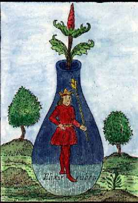
planche XII, bis
Cette variante ne diffère pas sensiblement de la planche XII. Nous voyons ici le roi couronné, le même que celui qui sort en vainqueur du feu, à l'emblème de l'Atalanta fugiens, XXIV. Les époux royaux tiennent un sceptre qui se termine par la fleur de lys. Sur le symbolisme du lys ou lis, voyez l'Oeuvre Secret de Jean d'Espagnet [notez que le Lilium minéral est un Mixte dont la composition est connue depuis l'abbé Rousseau, Livre de Secrets et Remèdes éprouvés. Il s'agit d'un sel fait des chaux métalliques du fer, du cuivre et de l'antimoine, auxquelles on ajoute, par fraction du nitre fixé sur des charbons ardents - c'est-à-dire de l'alkali fixe. Baron, dans le commentaire qu'il en donne - cf. Cours de Chymie de Lemery - préconise de s'abstenir de prendre de ce produit, qui est un caustique violent, contrairement à ce que dit Lemery. Ce sel semble être, en fait, un mélange de régules métalliques].
Notes complémentairesOn connaît d'autres séries de gravures du Donum Dei que nous allons voir à présent rapidement [afin d'accélérer le chargement de la page, nous n'avons pas inséré directement les gravures en couleurs sur la page. Cliquez sur les n° de planches pour accéder aux fichiers images]. Il ne semble pas que J. Van Lennep ait présenté ces planches. Nous les avons tiré du site déjà mentionné :
http://mypage.bluewin.ch/public/donumdei/
I.Planches couleur, Le précieux Don de Dieu, Bibliotheca Academia dei Lincei, Rome, XVIe siècle
un roi couronné, muni du bourdon. A ses pieds, une roche. Les symboles solaire et lunaire encadrent la scène. On peut y voir un équivalent de la planche I. Le roi peut être, en effet, comparé à l'embryon hermétique situé dans le matras qui sépare le couple royal.
Un vase, à quatre parties. La supérieure est rouge, l'autre est violette, elle-même séparée en deux par un bandeau vert, le Mercure. Voir la planche V.
Il s'agit des vents de l'oeuvre : Vulturnus, Notus, Calaïs et Zéthès. Se rapproche de la planche II, bis. Les couleurs se sont modifiées et le blanc prédomine. En bas, toujours la bande verte du Mercure.
La couleur est violet-noir. Une bande blanche sépare en deux la matière. Au fond duvase, un sédiment difficile à distinguer. Peut-être à rapprocher de la planche III ? Le sédiment serait alors l'équivalent du ménisque du bas du matras.
Ici, le sédiment a disparu. Ne subsistent que le blanc et le noir. Notez que le cercle blanc est notablement descendu dans le matras. Il s'agit de la phase de conjonction. A rapprocher de la planche IV.
Des serpents flottant dans la couleur blanche. La couleur noire surnage la blanche. Voir la planche VI. Nous sommes ici au signe alchimique des Gémeaux.
Un dragon. Comparable à la planche VIII. C'est la DEALBATIO.
Superbe planche où l'on voit une végétation avec ce qui semble être des violettes, des amarantes et des gueules-de-loup. DOMUS TENEBROSA. Voir la planche IX.
Se démarque nettement des autres séries. On voit trois couleurs, l'une supérieure, verte, correspondant à l'esprit [Mercure], l'autre blanche qui est le corps [Sel] et enfin, la dernière violette qui doit correspondre à l'âme [Soufre]. On peut donc la rapprocher de la planche X. CINIS CINERUM.
La lune hermétique. C'est une lune sombre. La couleur qui domine est le blanc. Voir la planche XI.
Ici, le caractère solaire est nettement affirmé. Voir la planche XII.
Mixte du blanc et du noir en des volutes qui signalent le caractère igné. Surplombant le tout, la couleur noire, signe de la calcination. PROJECTIO ET AUGMENTATIO. Voir la planche XIII.
L'athanor philosophique. On en trouvera la description exacte et complète dans le Filet d'Ariadne de Batsdorff. Faut-il ajouter qu'il s'agit d'un fourneau cabalistique ? On aurait tort de prendre ces images muettes à la lettre, mais le Mutus Liber nous a déjà habitué à ces énigmes disposées en forme de rébus hiéroglyphiques. Quoi qu'il en soit, cette planche donne à voir le fourneau, l'écuelle et en bas, le feu des sages que l'on devine au serpent [viscosité] s'enroulant autour de la tige [fixité].
II. Planches en noir et blanc, Donum Dei, Paris, Bibliothèque de l'Arsenal, Ms. 975, f. 10 r. - 26 r.
Dans son Psychologie et Alchimie, [Buchet-Chastel, 1970], C.G. Jung donne deux planches de ce mss, qu'il dit être tirées du Trésor des Trésors , datant du XVIIe siècle. La planche 11 en est identique avec celle du Trésor...Tandis que l'autre planche est identique avec la planche II de l'Aureum Vellus. Certaines planches sont en couleurs. Cliquez sur les planches en niveaux de gris pour avoir accès à la planche en couleurs.
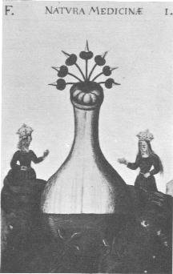
planche I
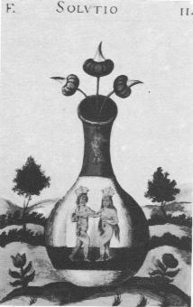
planche II
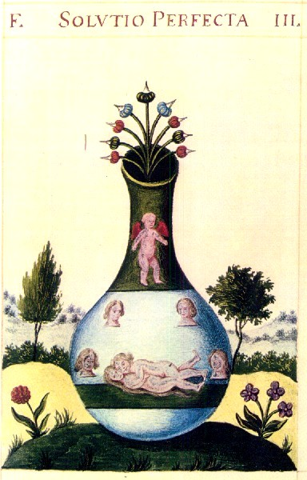
planche III
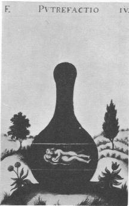
planche IV
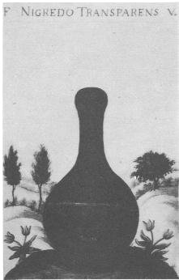
planche V
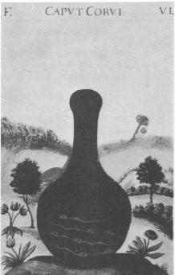
planche VI
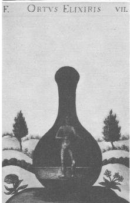
planche VII
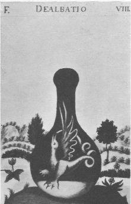
planche VIII
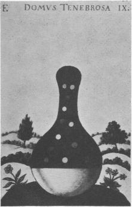
planche IX
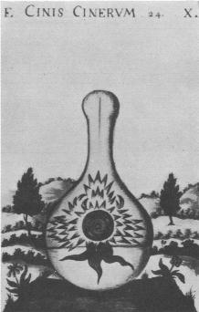
planche X
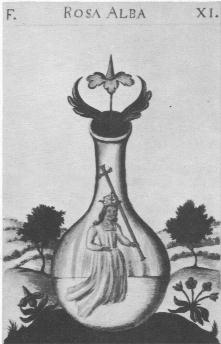
planche XIOn voit que dans l'ensemble, les planches de la version de la Bibliothèque de l'Arsenal sont proches de celles de l'Anatomia Auri de Mylius et de celles de l'Aureum Vellus de Güldin Schatz.
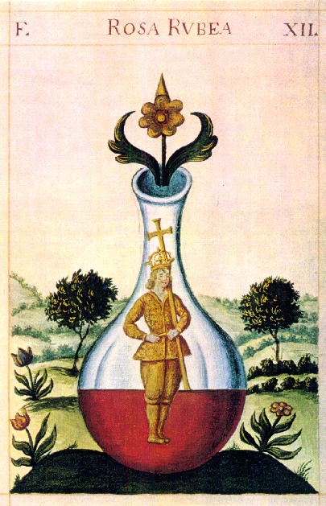
planche XII
III. planches de l'exemplaire du British Museum avec une introduction adaptée de Van Lennep
Nous ne commenterons pas ce texte qui se suffit à lui-même. Le lecteur trouvera des passages qui ont déjà été largement commentés en première partie.
Ils [les vases] sont certainement l'image la plus typique de cette iconographie. Elle matérialise le mieux le rêve de l'alchimiste qui, pendant des siècles, transposa dans l'imaginaire le processus chimique qui s'accomplissait dans son vaisseau: précipitation des matières, ébullition, dégagement des vapeurs, condensation, cristallisation, se succédant en couleurs variées.«Les philosophes n'auraient jamais parlé de tant de couleurs différentes et de leur succession les unes aux autres, s'ils ne les avaient vues et obtenues »,
précise notre manuscrit où, effectivement, elles défilent du vert de la matière crue jusqu'au rouge de l'élixir parfait.
Le vase pour l'alchimiste correspond à l'œuf cosmique, à la matrice universelle, à la chambre nuptiale, une allégorie qui inspira plus particulièrement le miniaturiste du Donum Dei. L'on y découvre d'abord le roi et la reine, leurs corps à demi engagés dans deux montagnes entre lesquelles se trouve le vase où ils s'uniront (planche I).« Le roi — précise le texte — dont la tête est rouge, les yeux noirs et les pieds blancs est le magistère... Et il naît sur deux montagnes plantées d'arbres ».
Celles-ci ne sont autres que les minières où croissent les sept métaux tels ces végétaux qui fleurissent au sommet du vase. Le roi invite sa bien-aimée à engendrer
« le fils nouveau qui est différent de ses parents ». « Joignez — conseille le texte — l'esclave avec sa sœur odoriférante, et ils feront entre eux tout l'ouvrage; car dès que la femme blanche est mariée avec le mari rouge, ils s'embrassent et s'unissent très étroitement, ils se dissolvent par eux-mêmes, et par eux-mêmes aussi ils se perfectionnent : de deux corps qu'ils étaient, ils deviennent un seul corps perfectible ».
Cette union commence à s'accomplir dans le deuxième vase où le couple royal se rapproche (planche II).
« Ici commence la solution des philosophes et se fait notre argent-vif. »
Les époux s'accouplent ensuite, entourés par quatre visages, les éléments qui sont la matière de la pierre et qu'ils vont réunir (planche III).
« Ici — explique la légende — les corps sont totalement dissous dans notre argent-vif et se fait une eau blanche comme des larmes ».
Les amants subissent alors
« la putréfacion des philosophes, la tête du corbeau, une noirceur transparente et claire »,car « ici — précise encore le texte — les corps sont en putréfaction et ils
deviennent une terre noire » (planche IV).Ces allégories de la nigredo sont encore reprises dans le cinquième vase (planche V). De cette noirceur, naîtront les vers du sixième vase, qui se dévoreront les uns les autres (planche VI). Le texte insiste sur cette phase noire :
« Apprenez que la tête de l'Art est le Corbeau qui vole dans les ténèbres de la nuit et dans la lumière du jour... Je vous ai découvert la vérité ; lorsque cela commence à noircir, nous appelons cela la clé de l'oeuvre parce que sans la noirceur rien ne réussit. Car cette noirceur est la teinture que nous cherchons et avec laquelle on teint tous les corps ».
Alors, se révèle dans le vase suivant, le « fils nouveau appelé élixir », le mercure en lequel la terre noire s'est métamorphosée (planche VII). Le huitième vase qualifié de « maison obscure », révèle qu'à partir du « noir plus noir que le noir même » apparaîtront diverses couleurs et ce soufre (planche VIII). Celui-ci uni au mercure permet d'obtenir la « cendre précieuse » sur laquelle poussera la
« fleur du soleil » qui apparaît dans le neuvième vase (planche IX). Elle annonce que l'oeuvre touche à son terme, en l'occurrence les élixirs blanc et rouge (planche X, XI). C'est celui-ci, est-il écrit,« qui transforme les corps les plus imparfaits en or plus exquis que celui des mines. On a expérimenté qu'une partie de cette poudre. Projetée sur mille parties d'argent vif, elle le congelle et le change en or très pur ».
Les enluminures du Donum Dei qui systématise un sujet iconographique traditionnel de l'alchimie, furent interprétées ou reprises par la suite, notamment dans quelques manuscrits que nous citerons, ceux de Paris, de Leyde ou de Nuremberg, mais surtout dans le Splendor Solis [...]
Jacques Van Lennep, in Alchimie, Dervy, 1985.
¯
Certaines planches sont en couleurs. Cliquez sur les planches en niveaux de gris pour avoir accès aux planches en couleurs.
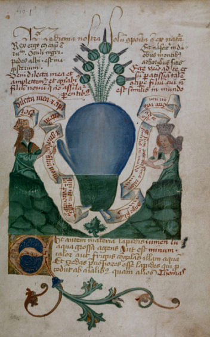
planche I
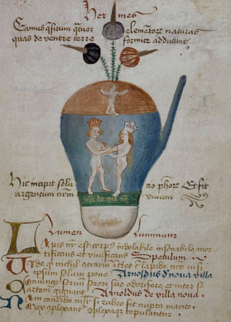
planche II
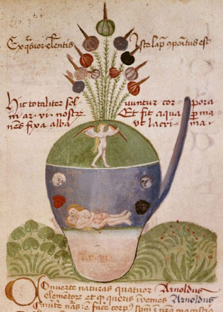
planche III
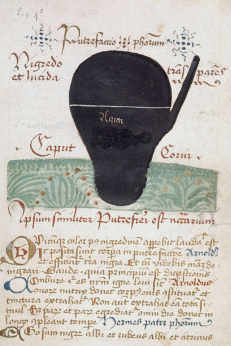
planche IV
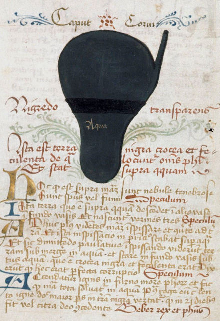
planche V
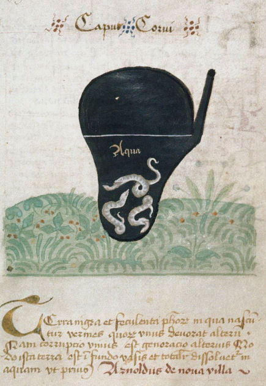
planche VI
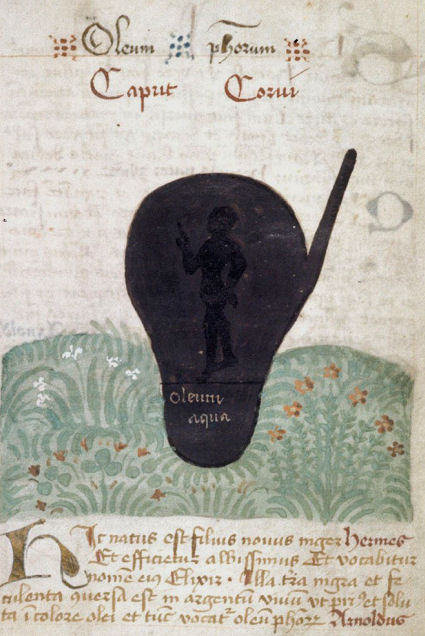
planche VII
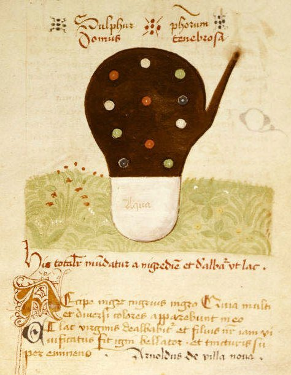
planche VIII